<!doctype html>
<html lang="en">
<head>
  <meta charset="utf-8">
  <meta name="viewport" content="width=device-width, initial-scale=1">
  <title>arxiv digest — 2026-07-11</title>
  <style>
:root {
  --bg: #ffffff;
  --fg: #1f2328;
  --muted: #59636e;
  --border: #d0d7de;
  --card: #f6f8fa;
  --link: #0969da;
}
body {
  max-width: 980px;
  margin: 0 auto;
  padding: 2rem 1rem 5rem;
  font-family: -apple-system, BlinkMacSystemFont, "Segoe UI", Helvetica, Arial, sans-serif;
  line-height: 1.55;
  color: var(--fg);
  background: var(--bg);
}
a { color: var(--link); }
img { max-width: 100%; height: auto; }
pre, code { background: var(--card); border-radius: 6px; }
pre { padding: 1rem; overflow-x: auto; }
blockquote { border-left: 4px solid var(--border); padding-left: 1rem; color: var(--muted); }
details { margin: 0.6rem 0; }
summary { cursor: pointer; font-weight: 600; }
.paper-figures-scroll {
  display: flex;
  gap: 1rem;
  overflow-x: auto;
  overscroll-behavior-x: contain;
  padding: 0.75rem 0.25rem 1rem;
  margin: 1rem 0 1.25rem;
  border-top: 1px solid var(--border);
  border-bottom: 1px solid var(--border);
  scroll-snap-type: x proximity;
}
.paper-figure-card {
  flex: 0 0 min(260px, 72vw);
  scroll-snap-align: start;
  background: var(--card);
  border: 1px solid var(--border);
  border-radius: 12px;
  padding: 0.55rem;
}
.paper-figure-card img {
  display: block;
  width: 100%;
  max-height: 240px;
  object-fit: contain;
  background: white;
  border-radius: 8px;
}
.paper-figure-caption {
  display: block;
  margin-top: 0.5rem;
  color: var(--muted);
  font-size: 0.85rem;
}
.figure-strip-hint {
  color: var(--muted);
  font-size: 0.9rem;
  margin-bottom: -0.3rem;
}
</style>
  <!-- MathJax: renders $...$ inline math and $$...$$ display math, plus
       \(...\) and \[...\]. Loaded from the official CDN; works offline
       once cached. Configured to skip code/pre blocks so arxiv IDs that
       look like dollar amounts don't get mangled. -->
  <script>
    window.MathJax = {
      tex: {
        inlineMath: [['$', '$'], ['\\(', '\\)']],
        displayMath: [['$$', '$$'], ['\\[', '\\]']],
        processEscapes: true,
        processEnvironments: true
      },
      options: {
        skipHtmlTags: ['script', 'noscript', 'style', 'textarea', 'pre', 'code'],
        ignoreHtmlClass: 'tex2jax_ignore',
        processHtmlClass: 'tex2jax_process'
      }
    };
  </script>
  <script id="MathJax-script" async
    src="https://cdn.jsdelivr.net/npm/mathjax@3/es5/tex-chtml.js"></script>
</head>
<body>
<header style="background-color: #333; color: white; padding: 15px; margin-bottom: 20px;">
  <h1 style="margin: 0; font-size: 24px;">
    <a href="https://ochelpan.github.io/arXiv_clean/" style="color: white; text-decoration: none;">Main</a>
  </h1>
</header>

<h1>Daily arXiv Report</h1>

<hr>
<p>
<a href="index.html">← Index</a>
 · <a href="papers_01.html">← Previous</a> · <a href="papers_03.html">Next →</a>
</p>
<hr>

<h2>Papers 21–40</h2>
<p><a id="paper-2607.07799"></a></p>
<h3 id="no-off-diagonal-quantum-focusing-for-renyi-divergences"><a href="http://arxiv.org/abs/2607.07799v1">No off-diagonal quantum focusing for Rényi divergences</a></h3>
<p><strong>Authors:</strong> Tanay Kibe, Pratik Roy<br>
<strong>Type:</strong> theory · <strong>Category:</strong> other · <strong>PDF:</strong> <a href="https://arxiv.org/pdf/2607.07799v1">https://arxiv.org/pdf/2607.07799v1</a><br>
<strong>Analysis basis:</strong> full PDF text, analyzed in chunks
<strong>Topic relevance:</strong> 🔥 <code>entanglement &amp; information structure</code> <strong>4/5</strong> · <code>Keldysh / 2PI / non-Gaussian methods</code> <strong>3/5</strong> · <code>non-equilibrium dynamics</code> <strong>2/5</strong> · <code>non-equilibrium universality</code> <strong>2/5</strong> · <code>analog quantum simulation</code> <strong>1/5</strong> · <code>correlated / nonlocal dissipation</code> <strong>1/5</strong> · <code>driven-dissipative phase transition</code> <strong>1/5</strong> · <code>methods for driven-dissipative</code> <strong>1/5</strong></p>
<div class="figure-strip-hint">↔ Scroll figures horizontally</div>
<div class="paper-figures-scroll">
<figure class="paper-figure-card">
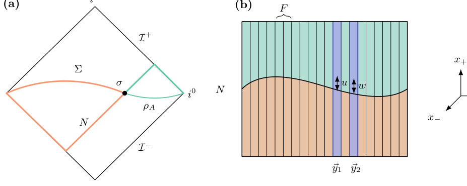
<figcaption class="paper-figure-caption"><b>Fig 1.</b> FIG. 1. (a) Penrose diagram of Minkowski spacetime with a Cauchy surface Σ that is split into two by the co-dimension two surface σ. N is a null hypersurface orthogonal to σ. The state ρA on the subregion A of Σ can be equivalently described on the green part of N together with the green part of future null infinity I+. (b) The null hypersurface N is divided into null pencils of infinitesimal width around the null generators of N. N is split into two parts (green and orange) by σ. The split is parametrized by a function V (⃗y) of the transverse coordinates. The two pencils of interest are colored blue and labeled by ⃗y1,2, with null deformation parameters u, w. F indicates a subset of the...</figcaption>
</figure>
</div>

<p><strong>Summary.</strong> This theoretical paper investigates whether a generalized 'quantum focusing' inequality holds for Rényi divergences in quantum field theory. By constructing a counterexample using specific divergence calculations, the authors prove that such an off-diagonal focusing statement does not hold universally for a broad class of information measures. This constrains the mathematical scope of generalizations of fundamental physical conjectures.</p>
<p><strong>Why it may be interesting.</strong> While focused on QFT/Gravity analogies, the mathematical machinery involving divergences and information flow (like relative entropy generalizations) is highly relevant to understanding entanglement structure in many-body quantum systems far from equilibrium.</p>
<details>
<summary>Detailed structure</summary>
<p><strong>Main problem.</strong> The authors investigate whether an off-diagonal quantum focusing inequality, analogous to those derived for diagonal Rényi divergences (RQNEC), holds universally for general Rényi-type divergences.</p>
<p><strong>Main result.</strong> They show that for a broad class of Rényi divergences satisfying standard axioms, the required off-diagonal focusing statement fails in general, providing a negative answer to the question.</p>
<p><strong>Method.</strong> The analysis constructs a counterexample using free quantum field theory on Minkowski spacetime and calculating the mixed variation ($\Delta_{12}D_\gamma$) of the Rényi divergence across different null generators.</p>
<p><strong>Model / system.</strong> The model is a regulated Quantum Field Theory (QFT) setup involving spectator degrees of freedom and two active null pencils. The focus is on how entanglement/information divergences behave when considering correlations between distinct spatial regions.</p>
<p><strong>Key observables.</strong> Off-diagonal variation $\Delta_{12}D^\gamma$, Rényi divergence $D_\gamma(\Psi\|\Omega)$, and the general structure of the focusing inequality.</p>
<p><strong>Important parameters / regimes.</strong> The Rényi parameter $\gamma$ (or $\alpha$), which dictates the specific form of the divergence used in the analysis.</p>
<p><strong>Assumptions / limitations.</strong> The results are restricted to divergences satisfying faithfulness, data processing inequality (DPI), tensor additivity, and matched classical-quantum conditioning rules.</p>
<p><strong>Figures summary.</strong> Not specified by notes; the focus is on deriving algebraic counterexamples for the divergence variation.</p>
<p><strong>Paper structure.</strong> The paper first reviews the context of quantum focusing conjectures, then develops calculations using specific block decompositions of states to compute the mixed variation $\Delta_{12}D_\gamma$ for various Rényi parameters, culminating in the explicit violation of the inequality.</p>
</details>
<details>
<summary>Abstract</summary>
<p>The quantum focusing conjecture is a mathematical expression of the idea that semiclassical gravity remains universally attractive. Its off-diagonal part is a monotonicity condition on the double null shape variation of relative entropy on distinct null generators, and has been argued to follow from strong subadditivity of entanglement entropy. Recent proof of a diagonal Rényi quantum null energy condition raises the question: does a full Rényi focusing statement also hold? We answer this question negatively for any Rényi-type divergence satisfying data processing, tensor additivity, and matched classical--quantum conditioning.</p>
</details>
<p><sub><a href="#top">↑ back to top</a></sub></p>

<p><a id="paper-2607.08649"></a></p>
<h3 id="extracting-conformal-data-from-loschmidt-echoes-after-critical-quenches"><a href="http://arxiv.org/abs/2607.08649v1">Extracting conformal data from Loschmidt echoes after critical quenches</a></h3>
<p><strong>Authors:</strong> Aleix Bou-Comas, Stefano Carignano, Sergio Cerezo-Roquebrún, Esperanza Lopez, Luca Tagliacozzo<br>
<strong>Type:</strong> theory · <strong>Category:</strong> statistical mechanics · <strong>PDF:</strong> <a href="https://arxiv.org/pdf/2607.08649v1">https://arxiv.org/pdf/2607.08649v1</a><br>
<strong>Analysis basis:</strong> full PDF text, analyzed in chunks
<strong>Topic relevance:</strong> 🔥 <code>non-equilibrium universality</code> <strong>4/5</strong> · <code>non-equilibrium dynamics</code> <strong>3/5</strong> · <code>entanglement &amp; information structure</code> <strong>2/5</strong> · <code>Keldysh / 2PI / non-Gaussian methods</code> <strong>1/5</strong> · <code>analog quantum simulation</code> <strong>1/5</strong> · <code>correlated / nonlocal dissipation</code> <strong>1/5</strong> · <code>driven-dissipative phase transition</code> <strong>1/5</strong> · <code>methods for driven-dissipative</code> <strong>1/5</strong></p>
<div class="figure-strip-hint">↔ Scroll figures horizontally</div>
<div class="paper-figures-scroll">
<figure class="paper-figure-card">
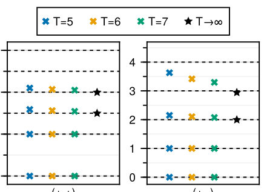
<figcaption class="paper-figure-caption"><b>Fig 1.</b> FIG. 1. Ratios of universal dynamical exponents obtained from the transverse transfer matrix of Loschmidt amplitudes in the critical Ising model. The (+, +) data correspond to the return amplitude ⟨+|U(T)|+⟩, while the (+, −) data correspond to the transition amplitude ⟨−|U(T)|+⟩. The black dashed lines indicate the exact CFT predictions. The crosses show numerical results for evolution times T = 5 (blue), T = 6 (orange), and T = 7 (green), while the black stars show the extrapolated values obtained from fits of the form ai,∞+ bi/T 2.</figcaption>
</figure>
<figure class="paper-figure-card">
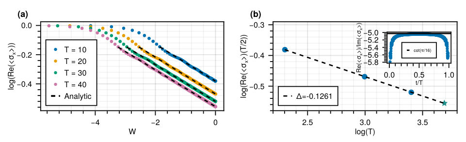
<figcaption class="paper-figure-caption"><b>Fig 2.</b> FIG. 2. (a) log (Re(⟨σx⟩)) as a function of the logarithmic chord coordinate W, with overlaid fits whose slope is consistent with the analytical prediction −h = −1/8. (b) log (Re (⟨σx⟩(T/2))) as a function of T, together with a fit whose exponent is consistent with the CFT prediction h = 1/8. The inset of panel (b) displays the ratio between the real and imaginary parts of ⟨σx⟩(t) at T = 40, consistent with the phase factor i−h.</figcaption>
</figure>
<figure class="paper-figure-card">
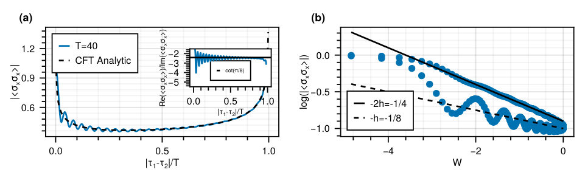
<figcaption class="paper-figure-caption"><b>Fig 3.</b> FIG. 3. Panel (a): | ⟨σxσx⟩| as a function of the normalized temporal distance |τ1 −τ2|/T between the two symmetric operator insertions. Black dashed lines correspond to CFT prediction on two symmetrically separated insertions on the strip, which follows Eq. (37). The inset shows the ratio of the real to the imaginary part of ⟨σxσx⟩at T = 40, consistent with the phase factor i−2h = i−1/4. Panel (b): log(Re ⟨σxσx⟩) as function of the chord distance W, defined in Eq. (31). The data show regimes compatible with power-law decay governed by exponents related to the scaling dimension of the spin field.</figcaption>
</figure>
<figure class="paper-figure-card">
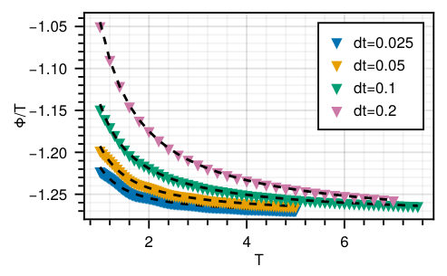
<figcaption class="paper-figure-caption"><b>Fig 4.</b> FIG. 4. Phase of the Loschmidt echo estimated through the phase-sensitive reconstruction protocol. In all simulations, we use dβ = 0.05, while different colors correspond to different choices of dt. The dashed black lines are fits to the expected form ϕ(T )</figcaption>
</figure>
<figure class="paper-figure-card">
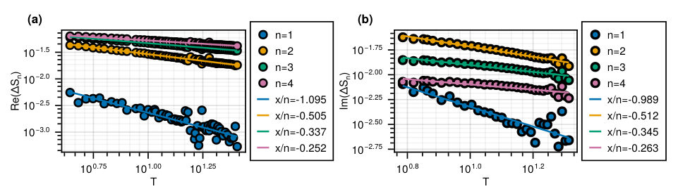
<figcaption class="paper-figure-caption"><b>Fig 5.</b> FIG. 5. Deviation of the real part (a) and imaginary part (b) of the generalized temporal R´enyi entropy from the leading CFT prediction at the center of the strip for the critical Ising model. The data correspond to different R´enyi indices, while the solid lines show fits to the expected power-law corrections governed by the exponent x/n.</figcaption>
</figure>
</div>

<p><strong>Summary.</strong> The paper develops a method to extract universal Conformal Field Theory data from real-time Loschmidt echoes following quantum quenches. By mapping the time evolution onto a boundary-CFT partition function, the authors show that ratios of spectral splittings encode fundamental CFT parameters like scaling dimensions and central charge. This provides a robust theoretical framework for analyzing out-of-equilibrium dynamics in critical systems.</p>
<p><strong>Why it may be interesting.</strong> This work provides powerful theoretical tools to probe non-equilibrium quantum dynamics using measurable quantities (echoes) that bypass the need for complex state preparation, making it highly relevant for characterizing critical points in physical systems.</p>
<details>
<summary>Detailed structure</summary>
<p><strong>Main problem.</strong> The goal is to develop a method to extract universal Conformal Field Theory (CFT) data from real-time quantum dynamics, specifically using Loschmidt echoes after critical quenches, without needing to prepare the difficult-to-access critical low-energy states.</p>
<p><strong>Main result.</strong> Ratios of spectral splittings derived from finite-size dependence of Loschmidt echoes are shown to be universal and directly encode differences in boundary scaling dimensions ($\Delta_i - \Delta_j$), allowing for a practical extraction protocol.</p>
<p><strong>Method.</strong> The analysis involves mapping the time evolution to a boundary-CFT partition function on a strip geometry, utilizing transverse transfer matrices whose spectra yield CFT data. Finite-size scaling protocols are developed by analyzing ratios of decay rates.</p>
<p><strong>Model / system.</strong> The study focuses on one-dimensional quantum systems undergoing a quench from an initial product state $|\psi_0
angle$ to a critical Hamiltonian $H$. The dynamics are diagnosed using the Loschmidt amplitude, $A(T) = \langle\psi_0| e^{-iHT} |\psi_0
angle$, which is related to boundary-CFT partition functions.</p>
<p><strong>Key observables.</strong> Loschmidt amplitude/echo ($L(T)$), transverse transfer matrix spectrum (eigenvalues $\lambda_i$), generalized temporal entropies, and ratios of dynamical exponents ($\Delta_{ii}/\Delta_{11}$).</p>
<p><strong>Important parameters / regimes.</strong> System size dependence ($N_X$), quench time ($T$), central charge ($c$), and boundary scaling dimensions ($\xi$).</p>
<p><strong>Assumptions / limitations.</strong> The analysis relies on analytic continuation from imaginary time (Euclidean) to real time, and the extraction protocols assume that finite-size effects can be systematically removed through ratios.</p>
<p><strong>Figures summary.</strong> Figures illustrate the tensor network representation of the Loschmidt amplitude via transverse contraction. Plots show linear relationships between logarithms of observables versus scaled time/temperature, confirming power-law decays predicted by CFT theory (e.g., slope $-1/8$).</p>
<p><strong>Paper structure.</strong> The paper builds from establishing the connection between Loschmidt echoes and boundary-CFT partition functions on a strip. It then details how spectral properties of the transverse transfer matrix encode universal data like central charge and scaling dimensions, culminating in proposing finite-size scaling protocols for experimental/simulation extraction.</p>
</details>
<details>
<summary>Abstract</summary>
<p>Conformal field theory provides universal predictions for Loschmidt amplitudes following quenches from product states to critical Hamiltonians. Building on this observation, we develop a route to extracting conformal data from real-time dynamics without preparing critical low-energy states. After analytic continuation, the Loschmidt amplitude is described by a boundary-CFT partition function on a strip, whose transverse transfer matrix encodes both the boundary operator spectrum and the central charge. Local space-time perturbations of the amplitude are governed by equilibrium correlation functions, and therefore provide access to critical exponents. In parallel, generalized temporal entropies exhibit scaling with time analogous to the equilibrium scaling of spatial entanglement entropy. We show that the low-lying boundary spectrum can be reconstructed from the system-size dependence of finite-chain Loschmidt echoes, whose damped oscillations encode differences of boundary scaling dimensions. Finally, we propose a finite-size scaling protocol that can extract these quantities from simulations or experiments on state-of-the-art quantum platforms.</p>
</details>
<p><sub><a href="#top">↑ back to top</a></sub></p>

<p><a id="paper-2607.07797"></a></p>
<h3 id="monte-carlo-solution-of-the-kondo-model"><a href="http://arxiv.org/abs/2607.07797v1">Monte-Carlo solution of the Kondo model</a></h3>
<p><strong>Authors:</strong> Nicolas Paris, Oscar Bouverot-Dupuis, Christophe Mora<br>
<strong>Type:</strong> theory · <strong>Category:</strong> strongly correlated electrons · <strong>PDF:</strong> <a href="https://arxiv.org/pdf/2607.07797v1">https://arxiv.org/pdf/2607.07797v1</a><br>
<strong>Analysis basis:</strong> full PDF text, analyzed in chunks
<strong>Topic relevance:</strong> 🔥 <code>Kondo &amp; dissipative impurity</code> <strong>4/5</strong> · <code>methods for driven-dissipative</code> <strong>3/5</strong> · <code>non-equilibrium dynamics</code> <strong>2/5</strong> · <code>non-equilibrium universality</code> <strong>2/5</strong> · <code>Keldysh / 2PI / non-Gaussian methods</code> <strong>1/5</strong> · <code>correlated / nonlocal dissipation</code> <strong>1/5</strong> · <code>driven-dissipative phase transition</code> <strong>1/5</strong></p>
<div class="figure-strip-hint">↔ Scroll figures horizontally</div>
<div class="paper-figures-scroll">
<figure class="paper-figure-card">
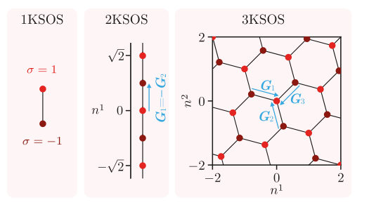
<figcaption class="paper-figure-caption"><b>Fig 1.</b> FIG. 1. Configuration space of the fields σ and n = (n1, . . . , nN−1) appearing in the NKSOS model for N = 1, 2, 3. The spin σ distinguishes two Bravais lattices with σ = 1 (red) and σ = −1 (brown). The reciprocal lattice vec- tors (in blue) are G1, . . . , GN.</figcaption>
</figure>
<figure class="paper-figure-card">
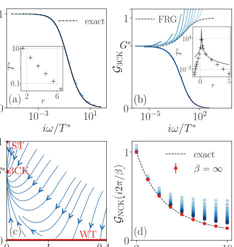
<figcaption class="paper-figure-caption"><b>Fig 2.</b> FIG. 2. (a) In blue, conductance of the 2CK model for J = 0 and for various values of r in terms of the rescaled frequency. The dashed black line corresponds to the Emery-Kivelson so- lution (7). The crossover temperature is displayed in inset. (b) Conductance of the 3CK model for J = 0. The black dashed line is the FRG result obtained in Ref. [42]. The y-tick G∗indicates the exact value at zero frequency. For r = 4, 5, the values of the conductance at the two lowest frequencies are not plotted as they suffer from finite size effects. The crossover temperature T ∗is displayed in inset and diverges at a finite value rc ≃0.26. Its behavior is compatible with the exact exponent given in Eq....</figcaption>
</figure>
<figure class="paper-figure-card">

<figcaption class="paper-figure-caption"><b>Fig 3.</b> FIG. 3. Left: Conductance as a function of K as expected from perturbation theory and duality arguments [64]. The first order transition appears for N ≥5. Right: Conductance obtained from the NKSOS model with the multi-histogram method [74] as a function of K for the 3CK model (light blue) and the 5CK model (dark blue). The dashed and dotted black line indicates the FRG results from Ref. [42] for the 3CK model.</figcaption>
</figure>
<figure class="paper-figure-card">
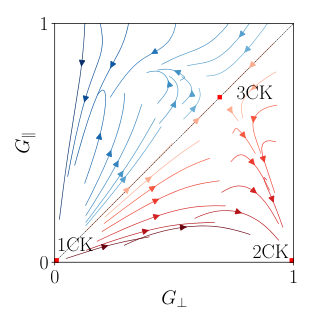
<figcaption class="paper-figure-caption"><b>Fig 4.</b> FIG. 4. Left: schematic interpretation of the 1CK, 2CK and 3CK fixed points in the 3KSOS model. Right: 3KSOS RG flow towards the 1CK, 2CK and 3CK fixed points. The lon- gitudinal conductance G∥(iω) is plotted as a function of the transverse conductance G⊥(iω).</figcaption>
</figure>
<figure class="paper-figure-card">
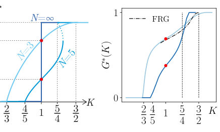
<figcaption class="paper-figure-caption"><b>Fig 5.</b> Fig. 3 left). The ST fixed point (G∗= 1) is stable for K &gt; N/(N −1) and the WT fixed point (G∗= 0) for K &lt; (N −1)/N. In the intermediate region, both are unstable, giving rise to a line of intermediate fixed points with 0 &lt; G∗&lt; 1. Our results confirm this scenario. The line of interme- diate fixed points of the 3CK model is recovered from the extrapolation of finite temperature results, as displayed in Fig. 3. Although extrapolating around K = 2/3 and K = 3/2 is made difficult by the presence of marginal operators, our results are consistent with perturbation theory in the vicinity of K = 2/3, the exact result at K = 1, and with recent FRG results [42] for K &gt; 1. From a qualitative...</figcaption>
</figure>
</div>

<p><strong>Summary.</strong> This paper develops an efficient Monte Carlo simulation technique using the NKSOS model to study the multichannel Kondo effect. It achieves a unified description, successfully modeling the transition between weak and strong electron-impurity coupling regimes. This work provides crucial quantitative predictions for transport properties in complex correlated quantum devices.</p>
<p><strong>Why it may be interesting.</strong> The rigorous numerical treatment of crossover physics in a highly correlated impurity model provides advanced computational techniques applicable to open quantum systems where tunneling barriers or coupling strengths vary widely.</p>
<details>
<summary>Detailed structure</summary>
<p><strong>Main problem.</strong> The central goal is establishing a unified theoretical description that connects different coupling regimes (weak vs. strong) for the Kondo effect, which is crucial for understanding strongly correlated electron systems.</p>
<p><strong>Main result.</strong> The authors successfully use their model to describe the crossover between weak and strong tunneling regimes in the multichannel Kondo problem, predicting universal low-frequency conductance values.</p>
<p><strong>Method.</strong> They employ cluster Monte Carlo algorithms on a discrete N-channel Kondo solid-on-solid (NKSOS) model, which efficiently simulates dynamics while eliminating critical slowing down.</p>
<p><strong>Model / system.</strong> The study focuses on the multichannel Kondo model using the NKSOS model, derived from an anisotropic Kondo Hamiltonian. This system generalizes to arbitrary channel numbers ($N$) and incorporates features like anisotropy and interacting leads.</p>
<p><strong>Key observables.</strong> Zero-frequency conductance ($G^*$), universal crossover functions, and transport properties across different coupling regimes.</p>
<p><strong>Important parameters / regimes.</strong> Number of channels ($N$), temperature ($T$), and various coupling strengths defining the weak/strong tunneling limits.</p>
<p><strong>Assumptions / limitations.</strong> The initial assumption of identical microscopic transparencies for all channels is noted as a potential limitation, though the method handles general asymmetry terms.</p>
<p><strong>Figures summary.</strong> Figures compare simulated conductance values (e.g., 2CK and 3CK) against established theoretical solutions (like Emery-Kivelson), illustrating universal scaling and RG flow in parameter space.</p>
<p><strong>Paper structure.</strong> The paper introduces the NKSOS model, details the cluster Monte Carlo simulation method to calculate transport properties, presents results showing agreement with known limits (1CK, 2CK), and finally extends the analysis to higher channel numbers ($N \geq 3$) to unify weak and strong coupling descriptions.</p>
</details>
<details>
<summary>Abstract</summary>
<p>The Kondo model is a paradigmatic quantum impurity problem realized in a wide variety of experimental platforms and central to the study of strongly correlated electrons. We introduce a discrete model that exactly reproduces the multichannel Kondo model and demonstrate that it can be simulated efficiently. Using cluster Monte Carlo algorithms, we completely eliminate critical slowing down, providing direct access to universal crossover functions and transport properties across a broad range of parameters. Remarkably, the same model captures both the weak- and strong-coupling regimes, unifying descriptions traditionally derived in complementary limits and revealing their common origin. Our method naturally accommodates large channel numbers, anisotropy, interacting one-dimensional leads, and channel asymmetry, yielding predictions for transport properties in charge-Kondo devices.</p>
</details>
<p><sub><a href="#top">↑ back to top</a></sub></p>

<p><a id="paper-2607.08372"></a></p>
<h3 id="theoretical-exploration-of-be-agii-f-phases-and-their-magnetic-properties-using-learning-algorithms"><a href="http://arxiv.org/abs/2607.08372v1">Theoretical exploration of Be Ag(II) F phases and their magnetic properties using learning algorithms</a></h3>
<p><strong>Authors:</strong> Katarzyna Kuder, Wojciech Grochala<br>
<strong>Type:</strong> theory · <strong>Category:</strong> strongly correlated electrons · <strong>PDF:</strong> <a href="https://arxiv.org/pdf/2607.08372v1">https://arxiv.org/pdf/2607.08372v1</a><br>
<strong>Analysis basis:</strong> full PDF text, analyzed in chunks
<strong>Topic relevance:</strong> 🔥 <code>analog quantum simulation</code> <strong>4/5</strong> · <code>exotic spin models in light-matter</code> <strong>3/5</strong> · <code>spintronics-quantum-optics interface</code> <strong>3/5</strong> · <code>Kondo &amp; dissipative impurity</code> <strong>1/5</strong> · <code>correlated cavity matter</code> <strong>1/5</strong> · <code>entanglement &amp; information structure</code> <strong>1/5</strong> · <code>non-equilibrium dynamics</code> <strong>1/5</strong></p>
<div class="figure-strip-hint">↔ Scroll figures horizontally</div>
<div class="paper-figures-scroll">
<figure class="paper-figure-card">
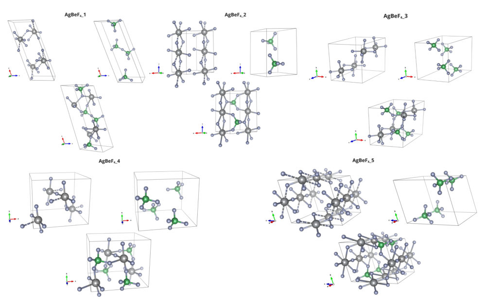
<figcaption class="paper-figure-caption"><b>Fig 1.</b> Figure 1. Coordination environments within the five proposed AgBeF4 polymorphs. For each structure, the coordination sphere of silver(II) is shown first, followed by the coordination sphere of beryllium, and finally a combined view illustrating both environments. Dark grey spheres represent Ag(2+), light grey spheres correspond to fluorine atoms, and green spheres denote beryllium atoms. Short and long Ag-F bonds are shown using solid and broken lines, respectively.</figcaption>
</figure>
<figure class="paper-figure-card">
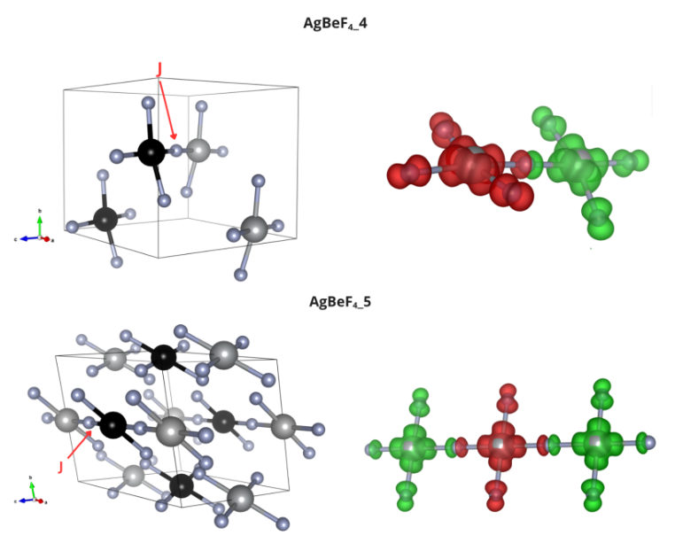
<figcaption class="paper-figure-caption"><b>Fig 2.</b> Figure 2. The ground state antiferromagnetic models investigated for the AgBeF4_4 and AgBeF4_5 polymorphs. Spin-up silver(II) cations are represented by grey spheres, while spin-down cations are shown as black spheres. To simplify the pictures, lithium cations and their coordination spheres were omitted. The visualization of the spin density within the infinite chain is also presented with the cutoff value of 0.005e/A3 [35].</figcaption>
</figure>
<figure class="paper-figure-card">
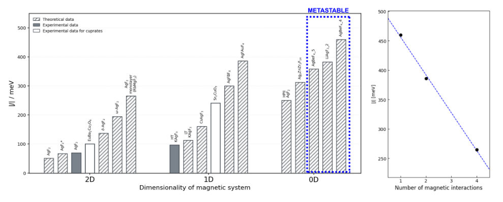
<figcaption class="paper-figure-caption"><b>Fig 3.</b> Figure 3. LEFT: Comparison of the absolute values of magnetic exchange coupling constants, |J|, for selected Ag(II)-based fluoride systems and representative cuprates, grouped according to the dimensionality of the magnetic lattice. Hatched bars denote theoretical data, filled bars denote experimental data, and open bars represent experimental data for cuprates. The dashed blue box highlights metastable compounds; RIGHT: Dependence of the largest absolute exchange coupling constant |J| on the number of magnetic interactions for Ag-F systems.</figcaption>
</figure>
<figure class="paper-figure-card">
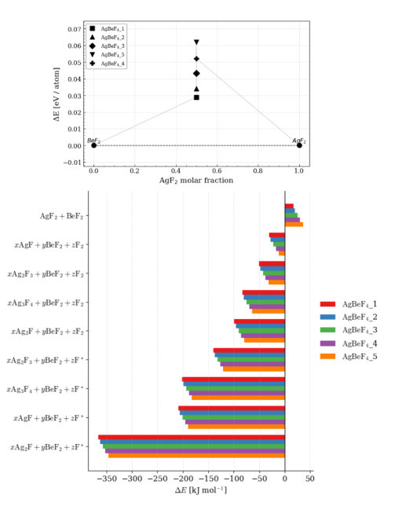
<figcaption class="paper-figure-caption"><b>Fig 4.</b> Figure 4. TOP: Convexhull for the proposed AgBeF4 polymorphs which shows the relative stability of the considered structures with respect to AgF2 and BeF2. BOTTOM: Calculated formation ener- gies of these structures from selected precursors in reactions involv- ing fluorine gas (F2) and fluorine radicals (F∗).</figcaption>
</figure>
</div>

<p><strong>Summary.</strong> This theoretical study explores five potential polymorphs of AgBeF4 as candidates for high-temperature superconducting materials. Using DFT calculations, the authors determined that these phases exhibit strong antiferromagnetic coupling, particularly in structures forming linear chains analogous to those found in cuprates. The work provides a computational roadmap for synthesizing and understanding novel magnetic fluorides.</p>
<p><strong>Why it may be interesting.</strong> While focused on solid-state chemistry, the methodology of calculating strong magnetic exchange interactions ($J$) in novel fluorides directly parallels theoretical work done on cuprates and other strongly correlated Mott insulators relevant to AMO physics research.</p>
<details>
<summary>Detailed structure</summary>
<p><strong>Main problem.</strong> The study aims to find novel silver(II) fluorides that could serve as electronic and magnetic analogues to high-temperature cuprate superconductors.</p>
<p><strong>Main result.</strong> Five polymorphs of AgBeF4 were identified, with two exhibiting exceptionally strong antiferromagnetic superexchange interactions (J values up to -460 meV), suggesting potential superconducting pathways.</p>
<p><strong>Method.</strong> The research combines global structure prediction algorithms with first-principles calculations (DFT+U) to determine structural stability and magnetic coupling constants.</p>
<p><strong>Model / system.</strong> The system under investigation is the Be–Ag(II)–F chemical space, specifically focusing on various polymorphs of AgBeF4. The magnetic interactions are modeled using a Heisenberg Hamiltonian approach based on calculated superexchange couplings (J).</p>
<p><strong>Key observables.</strong> Antiferromagnetic ground state confirmation, strong exchange coupling constants (J), electronic band gaps, and formation energies.</p>
<p><strong>Important parameters / regimes.</strong> Exchange coupling constants ($|J|$ in meV), Band Gaps (eV), Reaction Enthalpies ($    ext{kJ/mol}$), and structural parameters like bond lengths and angles.</p>
<p><strong>Assumptions / limitations.</strong> The phases are computationally found to be metastable, requiring synthesis via fluorine radicals; the calculations rely on DFT+U approximations for electronic structure.</p>
<p><strong>Figures summary.</strong> Figures illustrate coordination environments, ground state magnetic models comparing results to cuprates, and convergence checks for energy and k-point sampling. Tables list lattice parameters, band gaps, and calculated J values.</p>
<p><strong>Paper structure.</strong> The paper systematically explores five polymorphs using structure prediction, followed by detailed electronic (band structure, DOS) and magnetic (superexchange coupling calculation) analyses to characterize their potential as superconducting precursors.</p>
</details>
<details>
<summary>Abstract</summary>
<p>The search for novel silver(II) fluorides is driven by their potential as electronic and magnetic analogues to high temperature cuprate(II) superconductor precursors. Here, we explore the previously uncharted Be Ag(II) F chemical space using global structure prediction algorithms combined with first principles calculations. Focusing on the AgBeF4 stoichiometry, we identify the five lowest enthalpy polymorphs crystallizing in the C2, P minus 1, and P 21/c space groups. All polymorphs show an antiferromagnetic ground state, with AgBeF4_4 and AgBeF4_5 exhibiting unprecedented strong superexchange interactions of J equal circa to minus 460meV and J equal circa to minus 359meV respectively. Those high J values are due to the presence of either [Ag2F7] for AgBeF4_4, or related infinite [AgF2/2+2/1]2 minus chains for AgBeF4_5. Although the phases are found to be metastable with respect to binary difluorides, the thermodynamic analysis suggests that they could be targeted via synthetic routes employing fluorine radicals, with reaction enthalpies reaching minus 370 kJ/mol.</p>
</details>
<p><sub><a href="#top">↑ back to top</a></sub></p>

<p><a id="paper-2607.08697"></a></p>
<h3 id="quantifying-randomness-with-measurement-incompatibility"><a href="http://arxiv.org/abs/2607.08697v1">Quantifying randomness with measurement incompatibility</a></h3>
<p><strong>Authors:</strong> Sebastian Schlösser, Pauli Jokinen, Martin Plávala, Leevi Leppäjärvi, Leonardo S. V. Santos, Roope Uola<br>
<strong>Type:</strong> theory · <strong>Category:</strong> quantum information and computing · <strong>PDF:</strong> <a href="https://arxiv.org/pdf/2607.08697v1">https://arxiv.org/pdf/2607.08697v1</a><br>
<strong>Analysis basis:</strong> full PDF text, analyzed in chunks
<strong>Topic relevance:</strong> 🔥 <code>quantum measurements</code> <strong>4/5</strong> · <code>measurement-induced transitions</code> <strong>3/5</strong> · <code>entanglement &amp; information structure</code> <strong>2/5</strong> · <code>Keldysh / 2PI / non-Gaussian methods</code> <strong>1/5</strong> · <code>correlated / nonlocal dissipation</code> <strong>1/5</strong> · <code>driven-dissipative phase transition</code> <strong>1/5</strong> · <code>methods for driven-dissipative</code> <strong>1/5</strong></p>
<div class="figure-strip-hint">↔ Scroll figures horizontally</div>
<div class="paper-figures-scroll">
<figure class="paper-figure-card">
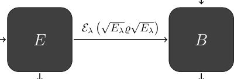
<figcaption class="paper-figure-caption"><b>Fig 1.</b> FIG. 1. A trusted quantum state enters a black box device (E) from which Eve obtains information λ. Eve can use channels Eλ as a decoy in order not to be detected. The quantum message enters Bob’s black-box device (B), the input y of which is not controlled by Eve.</figcaption>
</figure>
<figure class="paper-figure-card">
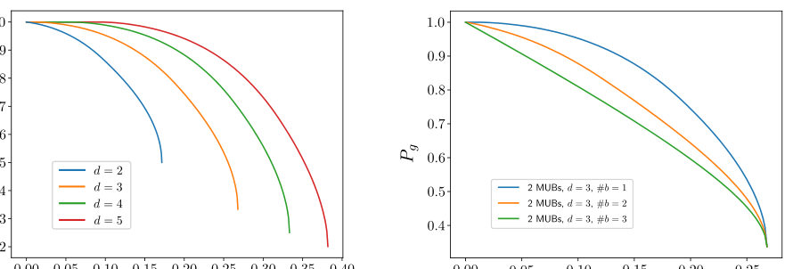
<figcaption class="paper-figure-caption"><b>Fig 2.</b> FIG. 2. Eve’s guessing probability as a function of the observed incompatibility robustness [Eq. (12)]. (a) Two mutually unbiased bases in dimensions 2 to 5. Since each of these sets of PVMs have different maximal incompatibility robustness, the lines stop at different points. (b) Two mutually unbiased bases in dimension 3 with multiple input states per basis.</figcaption>
</figure>
</div>

<p><strong>Summary.</strong> This work rigorously connects the concept of measurement incompatibility in quantum measurements to the ability to generate secret random bits. By formulating security bounds using semidefinite programming based on generalized robustness, the authors provide a powerful tool for quantifying device-independent randomness generation protocols.</p>
<p><strong>Why it may be interesting.</strong> It provides rigorous, information-theoretic tools (SDPs) to quantify fundamental resource relations—namely, how much non-classicality (incompatibility) can be extracted into usable randomness against an adversary.</p>
<details>
<summary>Detailed structure</summary>
<p><strong>Main problem.</strong> The paper establishes a quantitative trade-off between the observed measurement incompatibility of quantum measurements and the capabilities of an eavesdropper (Eve) in a prepare-and-measure setting.</p>
<p><strong>Main result.</strong> Measurement incompatibility is shown to be equivalent to the security against Eve's knowledge, providing a direct link between geometric measures of incompatibility and randomness generation protocols.</p>
<p><strong>Method.</strong> The authors utilize semidefinite programming (SDP) formulations involving generalized robustness witnesses to bound Eve's guessing probability ($P_g$) based on the joint measurability of Bob's measurements.</p>
<p><strong>Model / system.</strong> The model is a prepare-and-measure quantum communication scenario where an eavesdropper intercepts the message and performs operations described by instruments, analyzed using POVMs and concepts like quantum steering.</p>
<p><strong>Key observables.</strong> Measurement Incompatibility (quantified by generalized robustness), Eve's guessing probability ($P_g$), and the minimum entropy $H_{\min}$.</p>
<p><strong>Important parameters / regimes.</strong> The rank of the input state ($\varrho$) is crucial; the analysis extends to scenarios with quantum memory for Eve.</p>
<p><strong>Assumptions / limitations.</strong> Initial results rely on assuming full-rank input states, and later extensions involve bounding violations against qubit simulability.</p>
<p><strong>Figures summary.</strong> Figure 2 illustrates the quantitative trade-off between Eve's guessing probability and observed incompatibility robustness for various measurement settings (MUBs).</p>
<p><strong>Paper structure.</strong> The paper progresses from establishing the core equivalence (JM $\iff$ security) in simple cases, to developing SDP bounds using generalized robustness, extending this to quantum steering, and finally proving the mathematical equivalence between the initial SDP formulation and a steering-based SDP.</p>
</details>
<details>
<summary>Abstract</summary>
<p>We present a trade-off between the amount of observed measurement incompatibility and the capabilities of a classical Eavesdropper in a prepare-and-measure scenario. The result is based on a qualitative connection between measurement incompatibility and randomness generation together with the utilization of incompatibility witnesses as randomness certificates. This allows one to use a geometric measure of incompatibility, the generalised robustness, to bound Eve's strategies through a semi-definite program, while providing an explicit protocol for generating randomness from any set of incompatible measurements. By translating the result to quantum steering, we find a tight connection between steerability and randomness generation in a setting using any finite number of measurement inputs. We further show how our techniques can be generalised to scenarios where Eve has a quantum memory by using a dimensional generalisation of joint measurability.</p>
</details>
<p><sub><a href="#top">↑ back to top</a></sub></p>

<p><a id="paper-2607.08396"></a></p>
<h3 id="efficiently-simulable-quantum-circuits-with-large-entanglement-magic-and-non-gaussianity-via-code-compiled-tensor-networks"><a href="http://arxiv.org/abs/2607.08396v1">Efficiently simulable quantum circuits with large entanglement, magic, and non-Gaussianity via code-compiled tensor networks</a></h3>
<p><strong>Authors:</strong> Aydin Deger, Stergios Koutsioumpas, Mark Webster, Hasan Sayginel, Joschka Roffe, Dan E. Browne<br>
<strong>Type:</strong> theory · <strong>Category:</strong> quantum information and computing · <strong>PDF:</strong> <a href="https://arxiv.org/pdf/2607.08396v1">https://arxiv.org/pdf/2607.08396v1</a><br>
<strong>Analysis basis:</strong> full PDF text, analyzed in chunks
<strong>Topic relevance:</strong> 🔥 <code>entanglement &amp; information structure</code> <strong>4/5</strong> · <code>methods for driven-dissipative</code> <strong>3/5</strong> · <code>QC/QI experiment</code> <strong>2/5</strong> · <code>analog quantum simulation</code> <strong>1/5</strong> · <code>correlated cavity matter</code> <strong>1/5</strong> · <code>non-equilibrium dynamics</code> <strong>1/5</strong></p>
<div class="figure-strip-hint">↔ Scroll figures horizontally</div>
<div class="paper-figures-scroll">
<figure class="paper-figure-card">
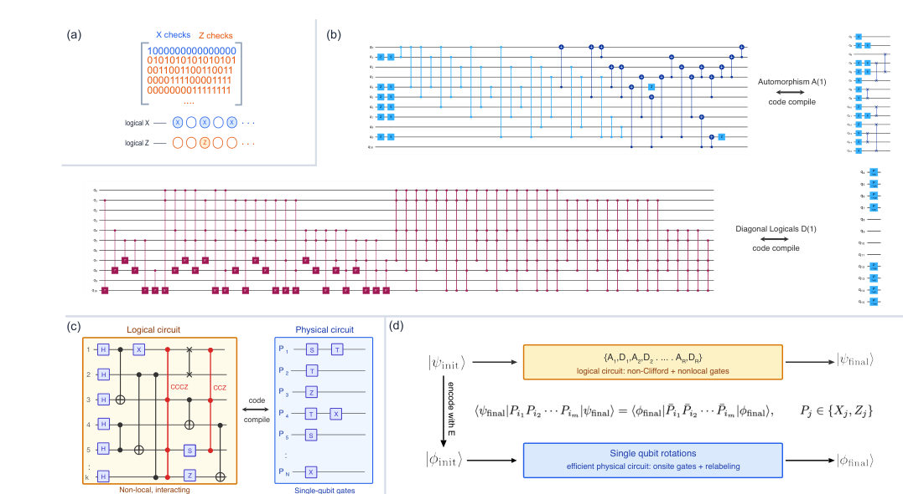
<figcaption class="paper-figure-caption"><b>Fig 1.</b> FIG. 1. Code-compilation framework. (a) X- and Z-check matrices, together with chosen logical ¯ X and ¯Z. (b) Two examples of matched physical/logical pairs. Top row: a single physical Clifford automorphism layer compiles to a dense, non-local logical Clifford circuit. Bottom row: a single physical transversal diagonal phase layer compiles to a non-trivial logical diagonal action containing two- and three-body phase terms. (c) Illustrative example: we randomly compose automorphism and diagonal matched pairs from the precomputed library. The resulting logical circuit (left, on k logical qubits) is highly nonlocal and contains both Clifford and non-Clifford gates such as CNOT, CZ, CS, CCZ,...</figcaption>
</figure>
<figure class="paper-figure-card">
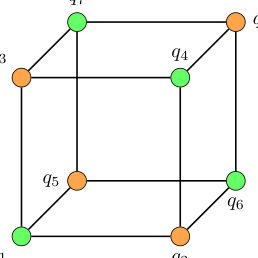
<figcaption class="paper-figure-caption"><b>Fig 2.</b> FIG. 3. Cube representation of the [[8, 3, 2]] code. The qubit labels match the stabilizers and logical operators writ- ten above. Green vertices carry T and orange vertices carry T † in the transversal phase layer.</figcaption>
</figure>
<figure class="paper-figure-card">
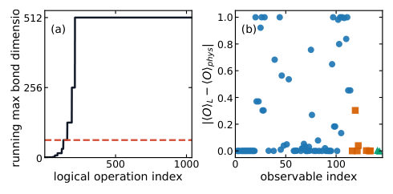
<figcaption class="paper-figure-caption"><b>Fig 3.</b> FIG. 5. Simulation for the polar l = 6 [[64, 57]] code family. (a) The solid black curve is the direct logical MPS running over 656 logical operations with maximum allowed bond di- mension ˜χ = 512. The dashed red curve is the compiled physical simulation, which uses a 64-qubit MPS. The physi- cal bond dimension remains fixed at 64. (b) For each observ- able O, we compare the capped logical MPS to the compiled physical reference using ∆O = |⟨¯O⟩−⟨O⟩phys|. Blue circles mark all single-qubit Xi and Zi observables on the 57 logical qubits, orange squares mark a sampled set of ten XX and ten ZZ pairs, and green triangles mark ten sampled four-X correlators.</figcaption>
</figure>
<figure class="paper-figure-card">
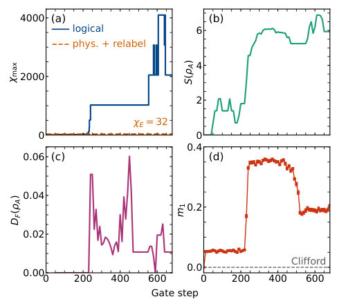
<figcaption class="paper-figure-caption"><b>Fig 4.</b> FIG. 4. Representative resource diagnostics for the polar l = 5 [[32, 26]] code family. (a) The physical simulation with classical relabeling stays pinned at the encoding cost χE = 32, while the direct logical simulation develops large bond-dimension spikes. (b) The maximal cut entropy grows substantially with depth. (c) The interaction distance shows departure from the free-fermion manifold. (d) The nonstabi- lizerness density m1 rises well above the Clifford baseline.</figcaption>
</figure>
<figure class="paper-figure-card">
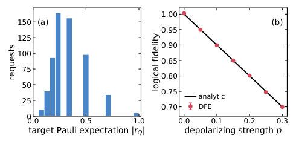
<figcaption class="paper-figure-caption"><b>Fig 5.</b> FIG. 6. Logical-DFE worked example for the polar l = 4, [[16, 11]] CCQC instance. (a) Distribution of the magnitudes of the target logical Pauli expectations |rQ| = | ⟨ψ| Q |ψ⟩| over the 600 sampled non-identity measurement requests at the 32- layer circuit. (b) Estimator validation on a simulated noisy device. A depolarizing channel σ = (1 −p) |ψ⟩⟨ψ| + pI/2k</figcaption>
</figure>
</div>

<p><strong>Summary.</strong> The paper introduces Code-Compiled Quantum Circuits (CCQCs) that allow the construction of deep quantum circuits exhibiting signs of classical hardness. By mapping these complex logical operations onto simple physical interactions using error-correcting codes, they show that simulation cost can be bounded by the encoder's bond dimension rather than entanglement growth. This provides a powerful theoretical benchmark for assessing the capabilities and limitations of near-term quantum hardware.</p>
<p><strong>Why it may be interesting.</strong> This work provides a powerful theoretical tool to benchmark quantum hardware by creating complex logical circuits whose ideal reference state is efficiently computable classically, which is crucial for testing fault tolerance in AMO or quantum optics settings.</p>
<details>
<summary>Detailed structure</summary>
<p><strong>Main problem.</strong> The goal is to determine when a quantum circuit becomes classically hard to simulate, challenging existing resource measures that define simulation boundaries.</p>
<p><strong>Main result.</strong> The authors demonstrate that certain code-compiled circuits can exhibit indicators of classical hardness (high entanglement, magic) while remaining efficiently simulable via Matrix Product States (MPS). This shows standard resource measures are individually insufficient to predict simulation difficulty for some circuit families.</p>
<p><strong>Method.</strong> They construct Code-Compiled Quantum Circuits (CCQCs) using high-rate CSS codes and simulate them by exploiting structural properties: diagonal transversal gates preserve the MPS bond dimension, and permutations are tracked classically. They use both MPS simulation and an exact phase-polynomial backend.</p>
<p><strong>Model / system.</strong> The model involves mapping complex logical quantum circuits onto physical qubits via error-correcting codes (specifically polar CSS codes). The resulting physical evolution is shown to be equivalent to a simple, onsite interaction structure after encoding.</p>
<p><strong>Key observables.</strong> Entanglement entropy, magic content, non-Gaussianity, and the MPS bond dimension ($\chi_E$).</p>
<p><strong>Important parameters / regimes.</strong> The peak bond dimension of the encoder ($\chi_E$), which controls the simulation cost regardless of circuit depth for certain codes.</p>
<p><strong>Assumptions / limitations.</strong> The method assumes that the encoded state retains an efficient MPS representation, and the structural properties regarding diagonal transversal gates and classical permutation tracking hold.</p>
<p><strong>Figures summary.</strong> Figures illustrate the code-compilation framework, showing how logical nonlocal gates are compiled into simple onsite physical operations. Specific examples use the $[[16, 11]]$ polar code to show matched pairs of complex logical circuits versus their physically simulated counterparts.</p>
<p><strong>Paper structure.</strong> The paper introduces the CCQC concept, details the simulation mechanism relying on structural properties (diagonal gates/relabeling), presents two complementary simulation backends (MPS and PhasePoly), demonstrates results using the infinite polar CSS code family, and concludes with a near-term application for fidelity estimation.</p>
</details>
<details>
<summary>Abstract</summary>
<p>We introduce a family of quantum circuits that possess standard indicators of classical simulation hardness including high entanglement entropy, magic, and non-Gaussianity, yet admit efficient classical simulation via matrix product states (MPS). Our construction uses logical circuits of high-rate Calderbank-Shor-Steane (CSS) codes with enhanced symmetries. Using code automorphisms and transversal diagonal gates from higher levels of the Clifford hierarchy, we realize nonlocal logical Clifford and non-Clifford gates, showing how error-correcting codes can compile complex logical circuits into simple physical operations. Simulation efficiency rests on two properties: (i) diagonal transversal gates do not increase bond dimension, and (ii) permutations are tracked classically via on-the-fly relabeling, avoiding costly SWAP networks. Unlike Clifford or matchgate simulation, our method accepts a broad class of initial states, including dense entangled, magic, and non-Gaussian inputs, provided the encoded state retains an efficient MPS representation. We also release an exact phase-polynomial backend for monomial subfamilies, whose cost is set by higher-degree phase terms rather than entanglement growth. We demonstrate the method on an infinite polar CSS code family, showing bond dimension stays bounded by the encoding cost regardless of circuit depth. These results show that for some circuit families, standard resource measures are individually insufficient to indicate simulation hardness. As a near-term application, we use the compiled MPS as a classical reference for direct fidelity estimation of a quantum device running nontrivial logical circuits. Pauli sampling on the encoded reference, with a Clifford pushback through the known encoder, provides the ideal expectation values, so the logical output fidelity can be estimated from local Pauli readout alone, without costly state tomography.</p>
</details>
<p><sub><a href="#top">↑ back to top</a></sub></p>

<p><a id="paper-2607.08560"></a></p>
<h3 id="qscouts-qubit-boson-gate-set"><a href="http://arxiv.org/abs/2607.08560v1">QSCOUT's Qubit-Boson Gate Set</a></h3>
<p><strong>Authors:</strong> Edward C. Tortorici, Ethan C. McGarrigle, Brian K. McFarland, Wes L. Johnson, Daniel S. Lobser, Melissa C. Revelle, Brandon P. Ruzic, Susan M. Clark, Christopher G. Yale<br>
<strong>Type:</strong> both · <strong>Category:</strong> quantum information and computing · <strong>PDF:</strong> <a href="https://arxiv.org/pdf/2607.08560v1">https://arxiv.org/pdf/2607.08560v1</a><br>
<strong>Analysis basis:</strong> full PDF text, analyzed in chunks
<strong>Topic relevance:</strong> 🔥 <code>QC/QI experiment</code> <strong>4/5</strong> · <code>quantum measurements</code> <strong>2/5</strong> · <code>quantum optics experiment</code> <strong>2/5</strong> · <code>analog quantum simulation</code> <strong>1/5</strong> · <code>measurement-induced transitions</code> <strong>1/5</strong> · <code>methods for driven-dissipative</code> <strong>1/5</strong> · <code>spintronics-quantum-optics interface</code> <strong>1/5</strong></p>
<div class="figure-strip-hint">↔ Scroll figures horizontally</div>
<div class="paper-figures-scroll">
<figure class="paper-figure-card">
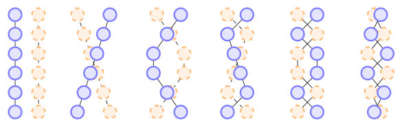
<figcaption class="paper-figure-caption"><b>Fig 1.</b> Figure 1: The flavors of radial modes for 6 ions labeled by mode index. Mode 0, the highest energy mode within a manifold, is the center of mass (COM) mode, and mode 1 is the the tilt mode. We refer to mode 2 as the drum mode, and the lowest energy mode (N −1) as the zig-zag mode (The remaining modes do not have strong naming conventions as they become more zig-zag-like in nature as the mode number increases). The qubits/ions are indexed starting from the center ion: they are labeled with increasing qubit number, alternating outward from the center, as seen on the left.</figcaption>
</figure>
<figure class="paper-figure-card">
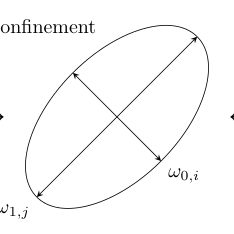
<figcaption class="paper-figure-caption"><b>Fig 2.</b> Figure 2: The radial confinement is elliptical, so that the two radial modes of the same mode index have different energies, such that ω0,i &gt; ω1,j for all i and all j, where i is the mode index for the upper manifold and j is the mode index for the lower manifold. The two beams driving Raman transitions are orthogonal to the axial direction, so they only project onto the radial modes.</figcaption>
</figure>
<figure class="paper-figure-card">
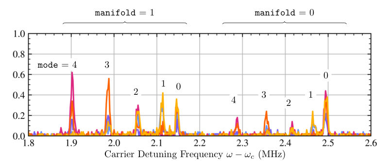
<figcaption class="paper-figure-caption"><b>Fig 3.</b> Figure 3: Motional sideband spectrum for 5 ions. The 5 flavors of radial modes each appear twice: one at a lower frequency (manifold = 1), and one at a higher frequency (manifold = 0). A qumode is then called out by specifying both a manifold and a mode index. The axial frequency manifold does not appear because the lasers do not project onto these modes.</figcaption>
</figure>
<figure class="paper-figure-card">
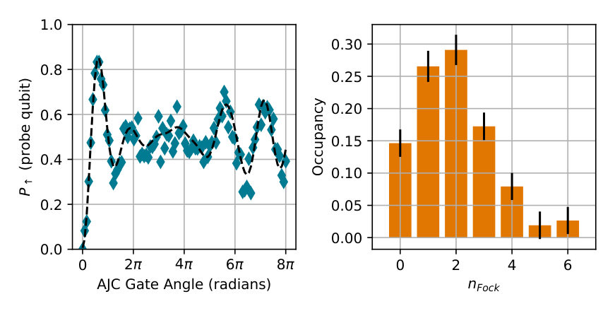
<figcaption class="paper-figure-caption"><b>Fig 4.</b> Figure 4: Example Fock State Occupancy Measurement. (left) The resultant beating oscillations from Fock occu- pation measurement via AJC gate. The oscillations are fit to eq. (43) to extract the Fock occupancies pn presented on the (right).</figcaption>
</figure>
<figure class="paper-figure-card">
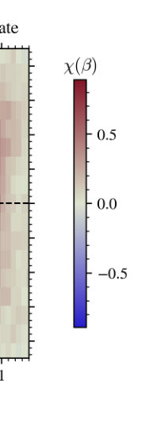
<figcaption class="paper-figure-caption"><b>Fig 5.</b> Figure 6: Example motional tomography data of a squeezed vacuum state.</figcaption>
</figure>
</div>

<p><strong>Summary.</strong> This paper describes the operational framework for performing hybrid continuous-discrete variable quantum computation on the QSCOUT trapped-ion system. It details how to use specific laser pulse sequences and a custom language, Jaqal, to implement advanced gates like Conditional Beamsplitter and Squeeze. The work is crucial for advancing hardware realization by providing rigorous protocols for gate execution and state verification.</p>
<p><strong>Why it may be interesting.</strong> This work is highly relevant as it bridges theoretical quantum control techniques (Hamiltonian engineering) directly to a physical hardware platform (trapped ions), providing actionable recipes for implementing complex quantum circuits in the CV-DV regime.</p>
<details>
<summary>Detailed structure</summary>
<p><strong>Main problem.</strong> The paper details how to implement a comprehensive qubit-boson gate set for hybrid continuous-discrete variable (CV-DV) quantum computation on the QSCOUT platform.</p>
<p><strong>Main result.</strong> It provides specific pulse sequences and language commands (Jaqal) necessary to execute advanced gates like Conditional Beamsplitter and Conditional Squeeze, alongside methods for state preparation and measurement.</p>
<p><strong>Method.</strong> The implementation relies on precisely timed laser pulses driving resonant sidebands (JC/AJC) and utilizing four-tone interactions to engineer complex quantum operations.</p>
<p><strong>Model / system.</strong> The system is a trapped-ion quantum processor (QSCOUT) using Yb-171 ions, where qubits are encoded in internal spin states ($\sigma$) and motional modes ($a, a^\dagger$) act as bosonic degrees of freedom. The coupling allows for hybrid CV-DV operations.</p>
<p><strong>Key observables.</strong> Fock state occupation probabilities ($p_n$), the characteristic function $\chi(eta)$, and the Wigner representation $W(\gamma)$ are key diagnostic tools used to verify gate fidelity and characterize motional states.</p>
<p><strong>Important parameters / regimes.</strong> Gate parameters include rotation angles ($  heta$) and phases ($\phi$); squeezing is controlled by the complex parameter $\zeta$; detunings ($\Delta\omega, \delta$) govern sideband resonance.</p>
<p><strong>Assumptions / limitations.</strong> The analysis assumes that motional modes can be truncated in the Fock basis (e.g., $|n=10
angle$), and state preparation relies on controlled sequential application of specific pulse sequences.</p>
<p><strong>Figures summary.</strong> Figures illustrate fitting beating oscillations from AJC gates to extract Fock occupancies, and show circuits for probing $\chi(eta)$ using conditional displacement gates, alongside examples of tomography data.</p>
<p><strong>Paper structure.</strong> The paper systematically introduces the platform (QSCOUT), defines fundamental gates (JC, AJC, CD, CR), details advanced gate implementations (BS, Squeeze) via specific Hamiltonians and pulse sequences, and concludes with measurement protocols for state characterization.</p>
</details>
<details>
<summary>Abstract</summary>
<p>The Quantum Scientific Computing Open User Testbed (QSCOUT) has developed a qubit-boson gate set for hybrid continuous-discrete variable (CV-DV) quantum computing. This document outlines how to utilize these gates on QSCOUT using Just Another Quantum Assembly Language, Jaqal\textsuperscript{TM}.</p>
</details>
<p><sub><a href="#top">↑ back to top</a></sub></p>

<p><a id="paper-2607.08761"></a></p>
<h3 id="irreducible-geometry-of-higher-order-correlator-families"><a href="http://arxiv.org/abs/2607.08761v1">Irreducible Geometry of Higher-Order Correlator Families</a></h3>
<p><strong>Authors:</strong> Kaito Kobayashi<br>
<strong>Type:</strong> theory · <strong>Category:</strong> strongly correlated electrons · <strong>PDF:</strong> <a href="https://arxiv.org/pdf/2607.08761v1">https://arxiv.org/pdf/2607.08761v1</a><br>
<strong>Analysis basis:</strong> full PDF text, analyzed in chunks
<strong>Topic relevance:</strong> 🔥 <code>entanglement &amp; information structure</code> <strong>4/5</strong> · <code>analog quantum simulation</code> <strong>2/5</strong> · <code>non-equilibrium dynamics</code> <strong>2/5</strong> · <code>Keldysh / 2PI / non-Gaussian methods</code> <strong>1/5</strong> · <code>methods for driven-dissipative</code> <strong>1/5</strong> · <code>non-equilibrium universality</code> <strong>1/5</strong></p>
<div class="figure-strip-hint">↔ Scroll figures horizontally</div>
<div class="paper-figures-scroll">
<figure class="paper-figure-card">
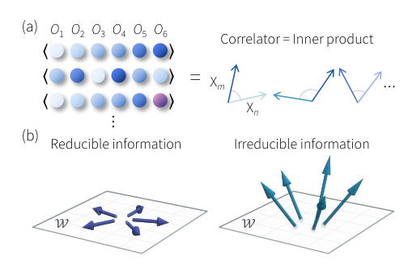
<figcaption class="paper-figure-caption"><b>Fig 1.</b> FIG. 1: (a) Schematic illustration of a family of correlators. A variety of higher-order correlators can be generated either by permuting the operators or by replacing some of them with others. Geometrically, these correlators can be viewed as inner products of operator words. (b) Correlator decomposition into the reducible part (the inner prod- uct of the projected components) and the irreducible part (the inner product of the residual components) relative to the conditioning sub- space W.</figcaption>
</figure>
<figure class="paper-figure-card">
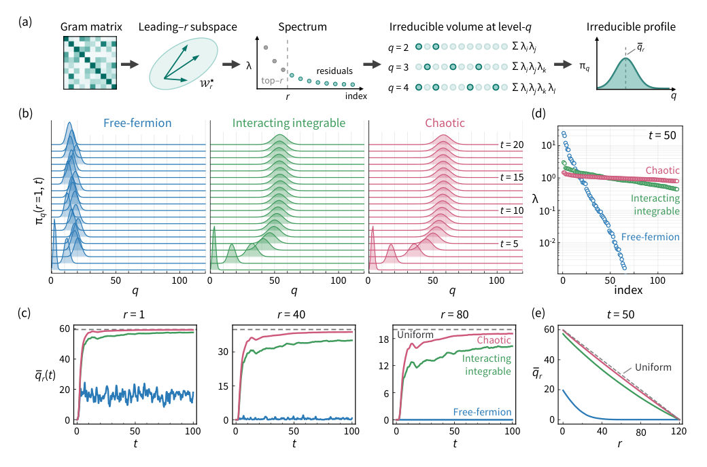
<figcaption class="paper-figure-caption"><b>Fig 2.</b> FIG. 2: (a) Schematic procedure for constructing the irreducible volume profile under canonical conditioning. (b) Time dependence of the irreducible volume profiles πq(r, t) = πq(Ω(t), W⋆ r (t)) for the operator word set in Eq. (47), shown at fixed conditioning rank r = 1. The three panels show free-fermion, interacting integrable, and chaotic dynamics at system size L = 9. Each ridge corresponds to a different base time t. (c) Time evolution of the mean irreducible level ¯qr(t) for representative conditioning ranks r. (d) Eigenvalue spectra of the Gram matrix G(Ω) at the representative late time t = 50. (e) Conditioning-rank dependence of the mean irreducible level ¯qr(t) at t = 50. The...</figcaption>
</figure>
<figure class="paper-figure-card">
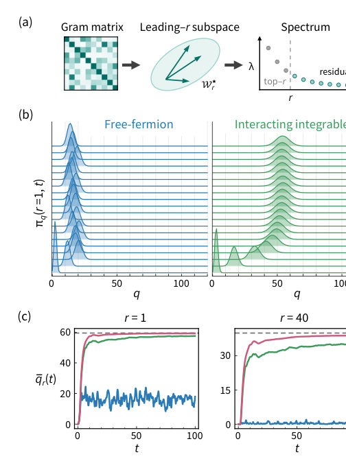
<figcaption class="paper-figure-caption"><b>Fig 3.</b> Figure 2(b) shows the time evolution of the irreducible vol- ume profile under canonical conditioning at r = 1. At early times, the profile is sharply concentrated near small q. The initially local operators have not yet spread significantly, and exchanging two operators within an operator word changes the word only slightly. Therefore, different orderings of the five operators remain highly redundant. Even a small canoni- cal sector then captures much of the correlator family, leav- ing only a low-dimensional irreducible geometry. As time increases, the operators spread, and their noncommutativity makes different operator words increasingly distinct. The</figcaption>
</figure>
<figure class="paper-figure-card">
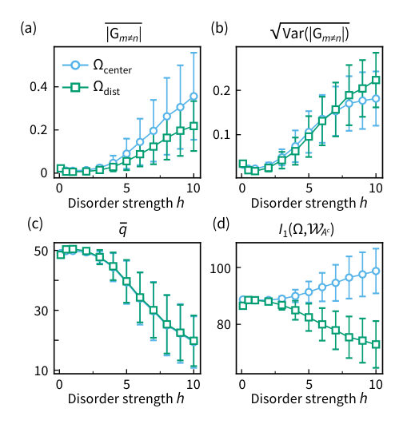
<figcaption class="paper-figure-caption"><b>Fig 4.</b> FIG. 3: (a) Disorder strength dependence of the mean absolute value of the off-diagonal correlators |Gm,n|, and (b) the corresponding stan- dard deviation √Var(|Gm,n|) for the MBL Hamiltonian in Eq. (51). The mean and standard deviation are first computed over all off- diagonal entries m , n of the Gram matrix, and these quantities are then averaged over disorder realizations. (c) Mean irreducible level ¯q and (d) first irreducible volume I1(Ω, WAc) as functions of disorder strength h. The conditioning sector is chosen as WAc, where A = {5} is the target region. In all panels, the blue and green curves show results for the operator families Ωcenter and Ωdist, respectively. Data are averaged...</figcaption>
</figure>
<figure class="paper-figure-card">
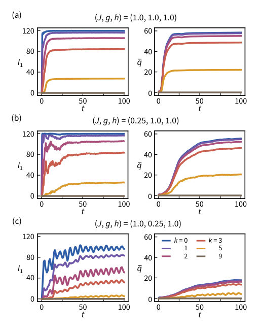
<figcaption class="paper-figure-caption"><b>Fig 5.</b> FIG. 4: Time evolution of the first irreducible volume I1(Ω, Wmeas ≤k ) and the mean irreducible level ¯q, obtained by conditioning with respect to the measurement-accessible subspace Wmeas ≤k for several off-diagonal depths k. The mixed-field Hamiltonian in Eq. (56) is employed with parameters (a) (J, g, h) = (1.0, 1.0, 1.0), (b) (0.25, 1.0, 1.0), and (c) (1.0, 0.25, 1.0). The operator word family Ω is constructed from the all σz probe in Eq. (57).</figcaption>
</figure>
</div>

<p><strong>Summary.</strong> This work establishes 'correlator geometry' as a theoretical tool for analyzing families of higher-order correlators in quantum many-body physics. By decomposing the geometry into reducible and irreducible parts, it quantifies genuinely novel information encoded in the system dynamics. This framework offers a systematic way to interpret complex data from programmable quantum simulators.</p>
<p><strong>Why it may be interesting.</strong> It provides a powerful, systematic geometric language to interpret complex, high-dimensional data generated by modern quantum simulators studying strongly correlated systems, moving beyond simple correlation functions.</p>
<details>
<summary>Detailed structure</summary>
<p><strong>Main problem.</strong> Developing a structured framework for the collective analysis of higher-order correlator families, as these are increasingly accessible from quantum simulators but their physical meaning is difficult to infer due to redundancy and interdependence.</p>
<p><strong>Main result.</strong> The authors introduce 'correlator geometry' which allows quantifying irreducible information via volume profiles, revealing hidden structures in many-body dynamics inaccessible from individual measurements.</p>
<p><strong>Method.</strong> The framework represents correlators as inner products between operator words in an abstract 'operator space,' decomposing the resulting geometry using conditioning subspaces to separate reducible and irreducible components.</p>
<p><strong>Model / system.</strong> The theory is applied to general quantum many-body systems, analyzing families of higher-order out-of-time-ordered correlators (OTOCs) relevant for studying dynamics in condensed matter contexts like spin chains or lattice models.</p>
<p><strong>Key observables.</strong> Correlator families, irreducible volume profiles ($\pi_q$), Gram matrix determinant ($\det G(\Omega)$), and the residual geometry $Q(W)$.</p>
<p><strong>Important parameters / regimes.</strong> The conditioning rank ($r$) used to define the resolved sector; system size ($L$); and comparison between different dynamical regimes (e.g., free-fermion vs. chaotic).</p>
<p><strong>Assumptions / limitations.</strong> The analysis assumes that correlator families can be systematically organized into a geometric structure amenable to subspace decomposition via conditioning.</p>
<p><strong>Figures summary.</strong> Figures schematically illustrate the construction of correlator families as inner products and demonstrate the decomposition of the geometry into reducible (explained) and irreducible (residual) components.</p>
<p><strong>Paper structure.</strong> The paper develops the formalism by first defining the geometric representation using the operator Gram matrix, then introducing various conditioning schemes (canonical, targeted, Krylov/cross), and finally applying this framework to diagnose differences between known quantum dynamics regimes.</p>
</details>
<details>
<summary>Abstract</summary>
<p>Programmable quantum simulators are beginning to access correlators of increasing complexity, ranging from four-point out-of-time-ordered correlators to even higher-order many-body correlators. The theoretical framework for interpreting such data, however, remains comparatively underdeveloped. Although a variety of higher-order correlators can be constructed straightforwardly, their physical meaning is often difficult to infer. A further complication is that different correlators are generally not independent: some may be mutually redundant, while others may encode genuinely distinct information. These features make it necessary to analyze correlators not as isolated quantities, but as a structured family. In this work, we develop a geometric framework for the collective analysis of higher-order correlator families. By representing correlators as inner products between operator words, we recast each family as a geometry in operator space. The key idea is to introduce conditioning subspaces that separate this geometry into reducible information, already explained by a chosen resolved sector, and irreducible information, encoded in the residual correlator geometry. Focusing on the latter component, we define irreducible volume profiles that quantify how broadly the unexplained part of a correlator family spreads over independent geometric directions. This perspective leads to several complementary forms of conditioning. Canonical conditioning optimally explains a correlator family. Targeted conditioning fixes the resolved sector to isolate a chosen physical feature. Krylov and cross conditioning extend the framework from a single correlator family to comparisons among correlator geometries. Our framework reveals irreducible structures hidden at the level of individual correlator values and establishes correlator geometry as a higher-level description of quantum many-body dynamics.</p>
</details>
<p><sub><a href="#top">↑ back to top</a></sub></p>

<p><a id="paper-2607.07805"></a></p>
<h3 id="robust-ion-photon-entanglement-via-polarization-to-time-bin-conversion"><a href="http://arxiv.org/abs/2607.07805v1">Robust Ion-Photon Entanglement via Polarization-to-Time-Bin Conversion</a></h3>
<p><strong>Authors:</strong> Ana Luiza Ferrari, Denton Wu, Mika A. Zalewski, Norbert M. Linke<br>
<strong>Type:</strong> experiment · <strong>Category:</strong> quantum information and computing · <strong>PDF:</strong> <a href="https://arxiv.org/pdf/2607.07805v1">https://arxiv.org/pdf/2607.07805v1</a><br>
<strong>Analysis basis:</strong> full PDF text, analyzed in chunks
<strong>Topic relevance:</strong> 🔥 <code>QC/QI experiment</code> <strong>4/5</strong> · <code>interference shaping light</code> <strong>3/5</strong> · <code>quantum optics experiment</code> <strong>3/5</strong> · <code>entanglement &amp; information structure</code> <strong>1/5</strong></p>
<div class="figure-strip-hint">↔ Scroll figures horizontally</div>
<div class="paper-figures-scroll">
<figure class="paper-figure-card">
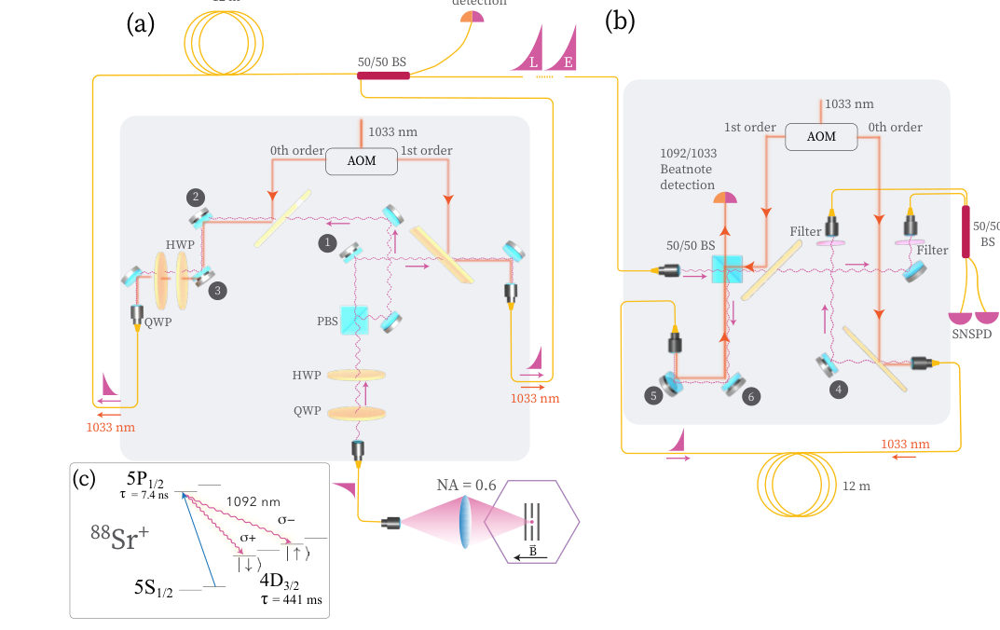
<figcaption class="paper-figure-caption"><b>Fig 1.</b> FIG. 1. (a–b) Encoder and decoder asymmetric Mach–Zehnder interferometers for the time-bin encoder (a) and decoder (b). (a) Waveplates set the polarization basis prior to conversion. A polarizing beam splitter separates the path of the horizontally and vertically polarized photons. The difference in length between the interferometer arms shifts the photons by 60 ns in time relative to each other. Waveplates before the 12 m delay line ensure the photons are identical in polarization degree of freedom when recombined at the 50/50 beam splitter, so the information is only encoded in time-bin. Piezos 2 and 3 are the 1033 nm lock actuators. Piezo 1 corrects for drift between the photon and 1033...</figcaption>
</figure>
<figure class="paper-figure-card">
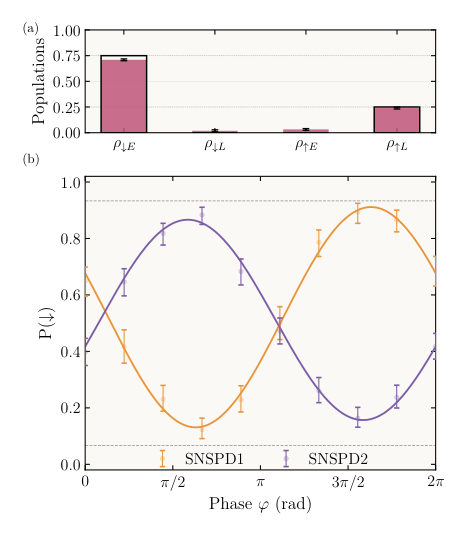
<figcaption class="paper-figure-caption"><b>Fig 2.</b> FIG. 2. Fidelity of the time-bin encoded ion-photon entangled state. (a) Populations of the time-bin encoded ion-photon state. Each column shows a measured diagonal term of the density matrix. The black boxes indicate the ideal popula- tions. (b) Diagonal basis correlations of the time-bin encoded ion-photon state. When the photons are in an early/late su- perposition, the probability of measuring a bright ion changes sinusoidally as a function of the phase of the ion analy- sis pulse. The dashed lines show the theoretical amplitude given our unbalanced ion-photon state. From (a) and (b), we calculate bounds on the converted ion-photon fidelity of 0.906 ± 0.011 ≤F ≤0.934 ± 0.011.</figcaption>
</figure>
<figure class="paper-figure-card">
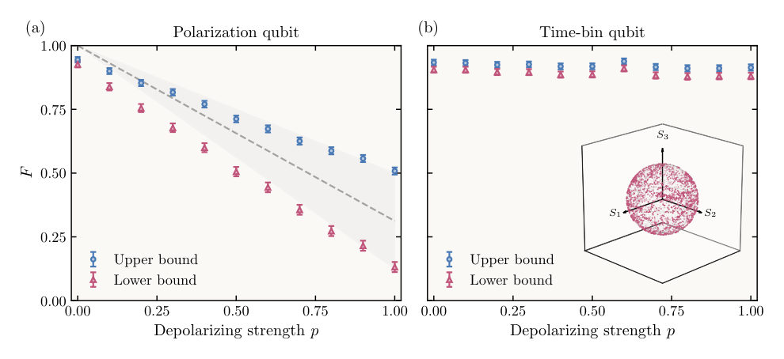
<figcaption class="paper-figure-caption"><b>Fig 3.</b> FIG. 3. Fidelity bounds for the polarization (a) and time-bin (b) encoded ion-photon state as a function of the depolarizing strength p. While the polarization-encoded ion-photon state fidelity degrades as a function of p, the time-bin state fidelity remains unaffected. Data at p = 0 and p = 1 are measured with the depolarizing channel off and on, respectively; intermediate points are statistical mixtures of the two datasets with weight p. Inset: Stokes parameters measured at the output of the fiber squeezer given a horizontally polarized input laser, recorded for one minute, showing depolarization at p = 1. Each point in (a) and (b) takes over one minute to acquire.</figcaption>
</figure>
<figure class="paper-figure-card">
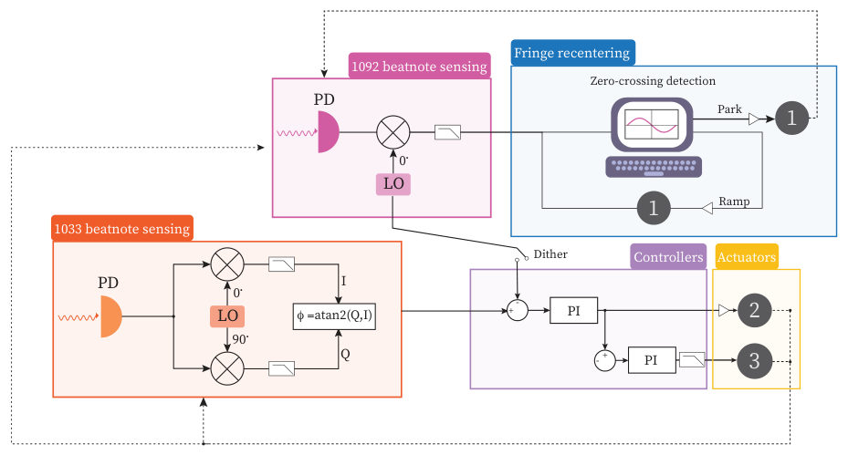
<figcaption class="paper-figure-caption"><b>Fig 4.</b> FIG. 4. Block diagram of the complete phase stabilization scheme. The piezo numbers 1–3 are the ones shown in Fig. 1(a) for the encoder board. The diagram is identical for the decoder board. The 1033 nm lock is engaged continuously, but holds its PI value for 200 ns during the photon detection time, when the stabilization beam is off. The beatnote is measured on a photodiode, and demodulated with analog mixer and low pass to extract the in-phase (I) and quadrature (Q) components. From them, an FPGA calculates the phase, which is the error signal for feeding back to actuator 2. Actuator 3 is a long-range piezo responsible for the rail control of actuator 2. Piezo-mirrors 2 and 3 affect the...</figcaption>
</figure>
<figure class="paper-figure-card">
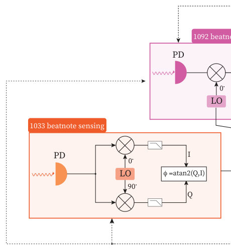
<figcaption class="paper-figure-caption"><b>Fig 5.</b> Fig. 5 shows the phase stabilization performance of each board during 500 s on the photon path. When no correction is applied, the phase undergoes uncontrolled drift. The 1033 nm lock suppresses oscillations but has a slow monotonic drift. By recentering the interferom- eter fringe every 10 s, this drift is suppressed. In the experiment, we conservatively recenter once per 30 s and observe no fidelity improvement from a higher recenter- ing frequency. We attribute the tolerance to infrequent recentering to the largely common-mode drift between the two boards, which sit next to each other on the same optical table.</figcaption>
</figure>
</div>

<p><strong>Summary.</strong> The research demonstrates an entanglement-preserving method to convert photonic qubits from polarization encoding to the more stable time-bin basis using trapped ${}^{88}	ext{Sr}^+$ ions. By implementing this conversion, the authors show that the resulting entangled state fidelity remains high and is robust against significant depolarizing noise, which is crucial for practical quantum communication networks.</p>
<p><strong>Why it may be interesting.</strong> This work directly addresses a critical bottleneck in quantum networking—maintaining coherence over long distances where fiber polarization drift is common. The successful demonstration of robust entanglement transfer via time-bin encoding is highly relevant to building scalable quantum repeaters and networks.</p>
<details>
<summary>Detailed structure</summary>
<p><strong>Main problem.</strong> The primary challenge is overcoming polarization instability inherent in quantum communication links when distributing entanglement between matter qubits (trapped ions) and photons.</p>
<p><strong>Main result.</strong> The implementation of a polarization-to-time-bin conversion successfully preserves entanglement fidelity, proving robust against depolarizing noise even at full depolarization strength.</p>
<p><strong>Method.</strong> The authors use an asymmetric Mach-Zehnder interferometer (MZI) as an encoder to convert the initial polarization encoding into a time-bin basis for the photonic qubit.</p>
<p><strong>Model / system.</strong> The system involves trapped ${}^{88}	ext{Sr}^+$ ions acting as matter qubits, emitting photons at $1092 	ext{ nm}$. The process requires two interferometers (encoder and decoder) to map polarization states ($|H
angle, |V
angle$) onto time-bins ($|E
angle, |L
angle$).</p>
<p><strong>Key observables.</strong> State fidelity bounds ($\approx 0.91 - 0.93$), conversion error ($< 0.028$), and the robustness of fidelity against depolarizing noise.</p>
<p><strong>Important parameters / regimes.</strong> Time-bin separation (60 ns), ion transition wavelength (1092 nm), and depolarization strength parameter ($p$).</p>
<p><strong>Assumptions / limitations.</strong> The analysis assumes that background counts are negligible for post-selected fidelity, and the phase error estimation is a conservative upper bound due to shared common-mode drift.</p>
<p><strong>Figures summary.</strong> Figures detail the MZI encoder/decoder setups (Fig. 1), show population measurements and coherence fringes for time-bin encoding (Fig. 2), illustrate the phase stabilization scheme (Fig. 4, Fig. 5), and compare fidelity vs. noise strength for both encoding methods (Fig. 3).</p>
<p><strong>Paper structure.</strong> The paper progresses by first establishing the need for robust entanglement distribution, detailing the physical implementation of the polarization-to-time-bin conversion using MZIs, quantifying the resulting state fidelity and error sources through detailed measurements, and finally demonstrating the superior noise resilience of the time-bin encoding.</p>
</details>
<details>
<summary>Abstract</summary>
<p>Time-bin photonic qubits are well-suited for quantum network applications due to their robustness to polarization instability in fiber links and potential for heterogeneous networks. In this work, we implement the first entanglement-preserving polarization-to-time-bin conversion of a photon qubit in an entangled state with a matter qubit. Photons initially generated with polarization encoding are converted to the time-bin basis through a polarization-discriminating asymmetric Mach-Zehnder interferometer. The photonic qubits are generated via the $1092$ nm transition of a $^{88}$Sr$^{+}$ ion. We measure state fidelity bounds of $0.906 \pm 0.011 \le \mathcal{F} \le 0.934\pm 0.011$, with conversion error $< 0.028$, and find this fidelity is unaffected by depolarizing noise even at full depolarization strength.</p>
</details>
<p><sub><a href="#top">↑ back to top</a></sub></p>

<p><a id="paper-2607.08762"></a></p>
<h3 id="typicality-of-steering-for-two-qubit-states"><a href="http://arxiv.org/abs/2607.08762v1">Typicality of Steering for Two-qubit States</a></h3>
<p><strong>Authors:</strong> Gerard Anglès Munné, Paweł Cieśliński, Tamás Vértesi, Wiesław Laskowski<br>
<strong>Type:</strong> theory · <strong>Category:</strong> quantum information and computing · <strong>PDF:</strong> <a href="https://arxiv.org/pdf/2607.08762v1">https://arxiv.org/pdf/2607.08762v1</a><br>
<strong>Analysis basis:</strong> full PDF text, analyzed in chunks
<strong>Topic relevance:</strong> 🔥 <code>entanglement &amp; information structure</code> <strong>4/5</strong> · 🔥 <code>quantum measurements</code> <strong>4/5</strong> · <code>measurement-induced transitions</code> <strong>3/5</strong></p>
<div class="figure-strip-hint">↔ Scroll figures horizontally</div>
<div class="paper-figures-scroll">
<figure class="paper-figure-card">
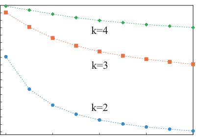
<figcaption class="paper-figure-caption"><b>Fig 1.</b> FIG. 1. Steering probability for SAB, SA, and S∅as a function of the number of measurement settings. Each color corresponds to a different random state ensemble Ek. Each data point is obtained by averaging the single-sample SDP output (see main text for details) over 106 independent realizations. For the Hilbert–Schmidt ensemble (k = 4), steering is almost negligible for SAB and SA at m = 2, but increases to approximately 10% and 7.5%, respectively, at m = 10. For k = 3, the steering probabilities grow rapidly with the number of measurements, reaching nearly 33% for the SAB scenario. The most pronounced effects are observed for the minimal coupling case of k = 2, where steering becomes the...</figcaption>
</figure>
<figure class="paper-figure-card">
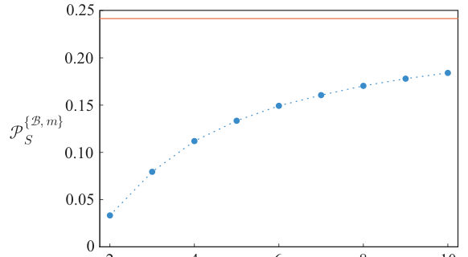
<figcaption class="paper-figure-caption"><b>Fig 2.</b> FIG. 2. Steering probability P{B,m} S for random Bell-diagonal states as a function of m Haar-random projective measurement settings. Initially, the steering probability is of the order of few percent. As expected, increasing m causes it to grow, and reach almost 20% for m = 10. In the limit m →∞, the steering probability approaches 24.15%, indicated by the horizontal line.</figcaption>
</figure>
<figure class="paper-figure-card">
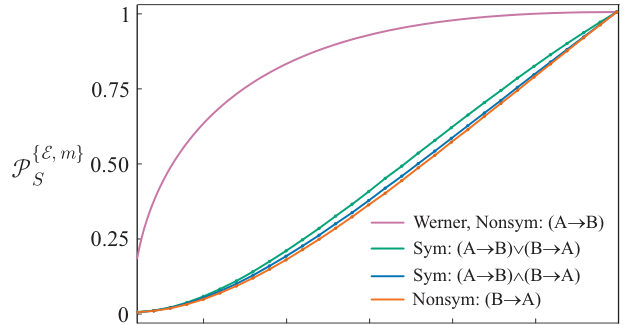
<figcaption class="paper-figure-caption"><b>Fig 3.</b> FIG. 3. Steering probability for depolarized states as a function of visibility for m = 2 Haar-random projective measurement settings. The steering probability PDv,m S for Haar-random depolarized two-qubit states is shown in green and blue and denoted as Sym. The corresponding probability for Werner states is plotted in green. The orange curve represents the probability of B →A steering for Haar-random states subjected to local separable noise (denoted as Nonsym), as defined in Eq. (16).</figcaption>
</figure>
</div>

<p><strong>Summary.</strong> This work quantifies the typicality of quantum steering—a measure of genuine quantum influence—in two-qubit systems subjected to multiple random measurements. By analyzing various state ensembles, the authors show that the probability of observing steering increases significantly with the number of measurements, suggesting that non-classical correlations are robust features of generic mixed states.</p>
<p><strong>Why it may be interesting.</strong> It provides rigorous quantitative bounds on how robustly non-classical correlations like steering manifest in realistic random quantum systems, which is crucial for designing entanglement-based quantum protocols.</p>
<details>
<summary>Detailed structure</summary>
<p><strong>Main problem.</strong> The paper investigates the 'typicality' of quantum steering—a non-classical correlation effect—for generic two-qubit states subjected to random projective measurements.</p>
<p><strong>Main result.</strong> The probability of observing steering ($P_S$) increases systematically with the number of measurements ($m$), approaching genuine typicality ($P_S=100\%$) asymptotically for many random state ensembles.</p>
<p><strong>Method.</strong> The authors use theoretical derivations, analytical expressions (for specific states like Werner states), and extensive numerical simulations employing Semi-Definite Programming (SDP) to calculate the steering probability integral over measurement settings.</p>
<p><strong>Model / system.</strong> The system is a two-qubit state ($
ho_{AB}$), analyzed in terms of its entanglement properties. The study focuses on mixed-state ensembles generated via partial tracing from larger random states, contrasting this with pure Haar-random states.</p>
<p><strong>Key observables.</strong> Steering probability ($P_S$), which quantifies the likelihood that observed conditional quantum states cannot be explained by a Local Hidden State (LHS) model.</p>
<p><strong>Important parameters / regimes.</strong> Number of measurements ($m$), visibility parameter ($v$) for Werner states, and the structure/ensemble type of the initial two-qubit state.</p>
<p><strong>Assumptions / limitations.</strong> The analysis distinguishes between finite $m$ detection and the asymptotic limit ($m 	o \infty$) required to claim typicality; specific calculations rely on assumptions about measurement settings (e.g., uniform choice on the Bloch sphere).</p>
<p><strong>Figures summary.</strong> Figures illustrate the systematic growth of $P^S$ versus $m$ for different state ensembles (like Bell-diagonal and depolarized states), showing how steering becomes more probable with more measurements.</p>
<p><strong>Paper structure.</strong> The paper progresses from defining quantum steering and its typicality, deriving analytical results for simple cases (Werner states), expanding to general mixed-state ensembles using numerical methods, and finally comparing the findings across various state families.</p>
</details>
<details>
<summary>Abstract</summary>
<p>Phenomena that slip beyond the grasp of our classical intuition reveal uniquely quantum effects that deepen our understanding of the physical world and enable advances in information processing, particularly in quantum communication and computation. One such phenomenon is quantum steering, whereby measurements performed by one party influence the conditional states of another when the two share an entangled quantum system. If the observed correlations cannot be explained by a local hidden state model, the state is said to be steerable. In this work, we investigate the typicality of this behavior: given a generic two-qubit state and $m$ Haar-random projective measurements, what is the probability of observing steering? We derive analytical expressions for the steering probability $\mathcal{P}_S$ of Werner states in two- and three-setting scenarios, the latter restricted to coplanar projective measurements on the Bloch sphere. For larger numbers of settings and various random states ensembles, we perform numerical analyses showing that $\mathcal{P}_S$ increases systematically with the number of measurements and substantially exceeds the corresponding probabilities associated with Bell nonlocality. Our results demonstrate that random states with minimal environmental coupling exhibit a high probability of steering for finite $m$ and approach genuine typicality, $\mathcal{P}_S=100\%$, as the number of settings increases. We provide a detailed characterization of $\mathcal{P}_S$ across different state ensembles and specific families, including Bell-diagonal and Werner states, identifying those with the greatest non-classical potential and highlighting their relevance for protocols in which steering serves as a key resource.</p>
</details>
<p><sub><a href="#top">↑ back to top</a></sub></p>

<p><a id="paper-2607.08710"></a></p>
<h3 id="competing-chern-states-revealed-by-quasiparticle-charging-in-moire-rhombohedral-graphene"><a href="http://arxiv.org/abs/2607.08710v1">Competing Chern states revealed by quasiparticle charging in moiré rhombohedral graphene</a></h3>
<p><strong>Authors:</strong> Hongyuan Li, Zuhan Geng, Junseok Seo, Chenxi Xu, Yifan Jiang, Shenyong Ye, Zhenqi Hua, Jiabin Xie, Lujin Min, Kenji Watanabe, Takashi Taniguchi, Kenji Yasuda, Xiaomeng Liu, Long Ju, Jie Shan, Kin Fai Mak<br>
<strong>Type:</strong> experiment · <strong>Category:</strong> strongly correlated electrons · <strong>PDF:</strong> <a href="https://arxiv.org/pdf/2607.08710v1">https://arxiv.org/pdf/2607.08710v1</a><br>
<strong>Analysis basis:</strong> full PDF text, analyzed in chunks
<strong>Topic relevance:</strong> 🔥 <code>analog quantum simulation</code> <strong>4/5</strong> · <code>driven-dissipative phase transition</code> <strong>2/5</strong> · <code>Kondo &amp; dissipative impurity</code> <strong>1/5</strong> · <code>correlated cavity matter</code> <strong>1/5</strong> · <code>entanglement &amp; information structure</code> <strong>1/5</strong> · <code>non-equilibrium dynamics</code> <strong>1/5</strong></p>
<div class="figure-strip-hint">↔ Scroll figures horizontally</div>
<div class="paper-figures-scroll">
<figure class="paper-figure-card">
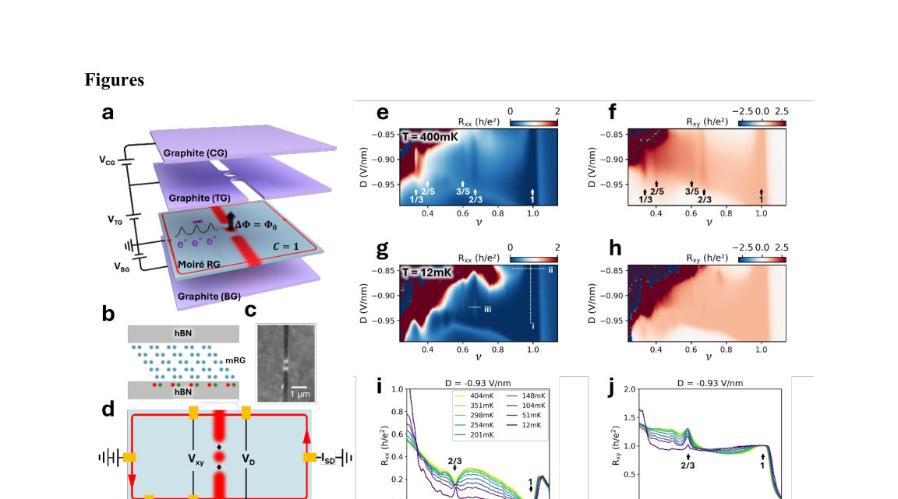
<figcaption class="paper-figure-caption"><b>Fig 1.</b> Figure 1 | Gate-defined antidot in moiré rhombohedral graphene. a,b, Schematic gate-defined antidot device (a) of pentalayer rhombohedral graphene (RG) angle-aligned with the bottom hBN to form a moiré lattice (b). CG, TG and BG denote the control gate, the lithographically patterned top gate and the bottom gate, respectively. 𝑉𝑉𝐶𝐶𝐶𝐶, 𝑉𝑉𝑇𝑇𝑇𝑇 and 𝑉𝑉𝐵𝐵𝐵𝐵 are the voltages applied to CG, TG and BG, respectively. The moiré sample is set to an integer Chern insulating state with Chern number 𝐶𝐶= 1 . Threading magnetic flux in units of the flux quantum ∆Φ = Φ0 pumps quasiparticles of charge 𝑒𝑒∗ to the antidot. c, An AFM image of the device near the antidot area. Scale bar denotes 1µm. d,...</figcaption>
</figure>
<figure class="paper-figure-card">
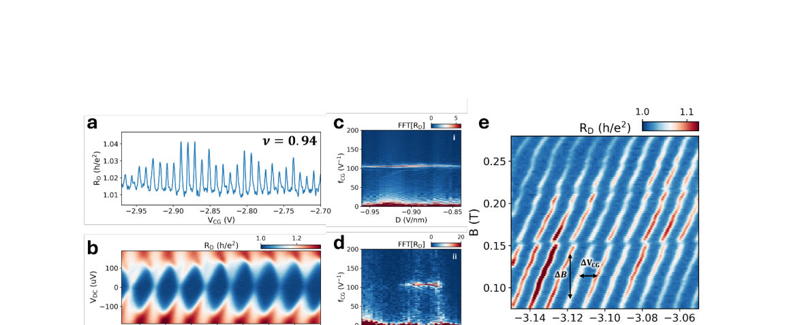
<figcaption class="paper-figure-caption"><b>Fig 2.</b> Figure 2 | Antidot resonance tunneling near 𝝂𝝂= 𝟏𝟏. a, The diagonal resistance 𝑅𝑅𝐷𝐷 (in units of ℎ</figcaption>
</figure>
<figure class="paper-figure-card">
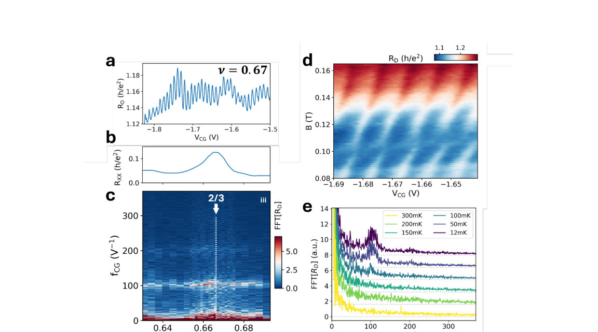
<figcaption class="paper-figure-caption"><b>Fig 3.</b> Figure 3 | Antidot resonant tunneling near 𝝂𝝂= 𝟐𝟐/𝟑𝟑. a, 𝑅𝑅𝐷𝐷 as a function of 𝑉𝑉𝐶𝐶𝐶𝐶 measured at 𝜈𝜈= 0.67 (𝐵𝐵= 50mT). b, 𝑅𝑅𝑥𝑥𝑥𝑥 line cut along the dashed line iii in Fig. 1g. c, Fourier transformed spectrum of 𝑅𝑅𝐷𝐷 (with respect to 𝑉𝑉𝐶𝐶𝐶𝐶) measured along the same dashed line as in b. The oscillation at 𝑓𝑓𝐶𝐶𝐶𝐶≈100V-1 peaks around 𝜈𝜈= 2/3. d, 𝑅𝑅𝐷𝐷 as a function of 𝑉𝑉𝐶𝐶𝐶𝐶 and 𝐵𝐵 at 𝜈𝜈= 0.67. e, The Fourier transformed spectrum of 𝑅𝑅𝐷𝐷 at 𝜈𝜈= 0.67 and different temperatures. The curves are vertically displaced for clarity. The oscillation at 𝑓𝑓𝐶𝐶𝐶𝐶≈100V-1 disappears at about 100mK. All measurements were acquired at 𝐷𝐷= −0.93V/nm and 𝑇𝑇= 12mK (except panel e for temperature).</figcaption>
</figure>
<figure class="paper-figure-card">
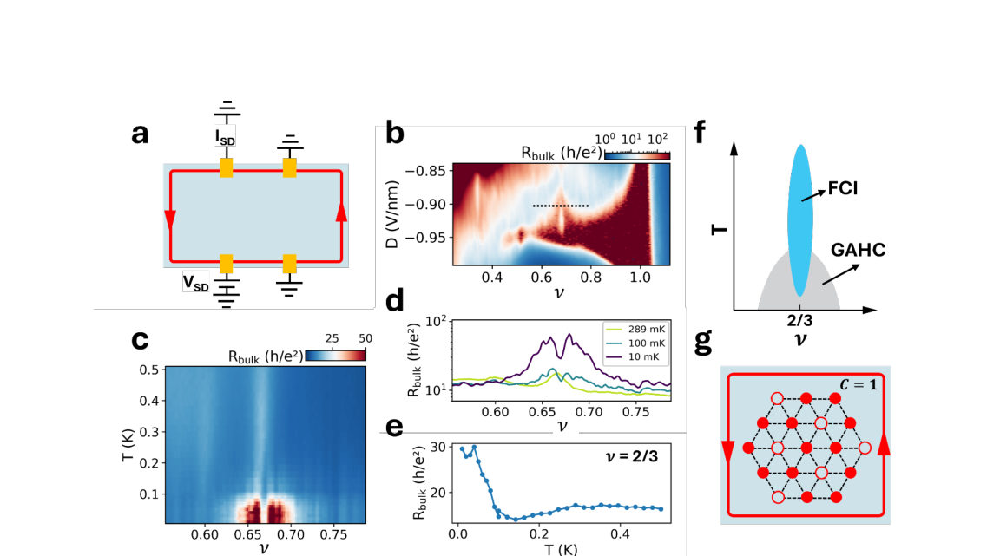
<figcaption class="paper-figure-caption"><b>Fig 4.</b> Figure 4 | Competing ground states probed by bulk resistance. a, Measurement schematics for the two-terminal quasi-bulk resistance 𝑅𝑅𝑏𝑏𝑏𝑏𝑏𝑏𝑏𝑏 of a Chern insulator. All electrodes downstream the source electrode (biased at 𝑉𝑉𝑆𝑆𝑆𝑆) are grounded; currents are collected only at the electrode immediately upstream the source electrode. b. 𝑅𝑅𝑏𝑏𝑏𝑏𝑏𝑏𝑏𝑏 (in units of ℎ</figcaption>
</figure>
</div>

<p><strong>Summary.</strong> The researchers investigated the nature of a phase change in moiré rhombohedral graphene between two topological states: an FCI and an anomalous Hall crystal. By using bulk-sensitive quasiparticle charging measurements, they definitively ruled out edge effects and established that the transition is a genuine thermodynamic phase transition occurring at very low temperatures.</p>
<p><strong>Why it may be interesting.</strong> This work provides experimental confirmation of competing correlated ground states in moiré systems, which is highly relevant for understanding emergent topological order and fractionalized excitations in strongly interacting electron systems.</p>
<details>
<summary>Detailed structure</summary>
<p><strong>Main problem.</strong> The study aims to resolve whether the observed transition from a Fractional Chern Insulator (FCI) to an extended quantum anomalous Hall background in moiré rhombohedral graphene is due to edge state equilibration failure or a genuine bulk phase transition.</p>
<p><strong>Main result.</strong> Quasiparticle charging measurements and temperature-dependent bulk resistance strongly suggest that the system undergoes a thermodynamic phase transition from an FCI to a generalized anomalous Hall crystal at low temperatures, ruling out the edge state scenario.</p>
<p><strong>Method.</strong> The research employs mesoscopic transport measurements, including quasiparticle tunneling spectroscopy (measuring diagonal resistance) and bulk longitudinal/Hall resistance mapping across varying filling factors and temperatures.</p>
<p><strong>Model / system.</strong> The physical system is moiré rhombohedral graphene (mRG), fabricated into a mesoscopic antidot device structure. The physics explores competing topological ground states, specifically FCI versus generalized anomalous Hall crystal phases.</p>
<p><strong>Key observables.</strong> Quasiparticle charge carried during tunneling ($e^*$), quantized resistance plateaus ($R_{xx}, R_{xy}$), and the temperature dependence of bulk resistance near critical filling factors ($
u=2/3$).</p>
<p><strong>Important parameters / regimes.</strong> Low temperatures (down to 12 mK) are crucial for observing clear signatures; the transition occurs below $T \approx 150$ mK.</p>
<p><strong>Assumptions / limitations.</strong> The use of bulk-sensitive antidot measurements is necessary to overcome ambiguities inherent in edge-state dominated Hall bar measurements.</p>
<p><strong>Figures summary.</strong> Figures illustrate device schematics, resonant tunneling peaks (Coulomb oscillations) at specific fillings ($
u=1, 2/3$), and phase diagrams showing the competition between FCI and GAHC states as temperature changes.</p>
<p><strong>Paper structure.</strong> The paper systematically presents evidence from quasiparticle charging measurements to establish charge quantization, followed by bulk resistance mapping that reveals a temperature-dependent transition between two distinct topological phases.</p>
</details>
<details>
<summary>Abstract</summary>
<p>Moiré materials realize a versatile platform for exploring the physics of fractional Chern insulators (FCIs). The recently observed evolution from FCIs to an extended quantum anomalous Hall background upon lowering the electronic temperature in moiré rhombohedral graphene (mRG)8 raises a fundamental question: Is it caused by a failure to equilibrate the edge states of an FCI or by a genuine phase transition in the bulk from an FCI to a generalized anomalous Hall crystal? Here we address this question by probing quasiparticle charging in a mesoscopic mRG antidot device and by bulk resistance measurements, both of which are bulk-sensitive and free from complications from edge states. Tunneling to the mRG antidot reveals quasiparticles carrying one electron charge for both Chern states at filling factors ν=1 and 2/3 at low temperatures. Temperature dependence measurements of the bulk resistance near ν=2/3 further suggest a thermodynamic phase transition from an FCI to a generalized anomalous Hall crystal at temperatures below about 150mK. The results clearly exclude the edge state equilibration scenario and favor the phase transition scenario. Our work establishes mesoscopic probes as a powerful approach to uncover competing ground states in moiré materials and provides a basis for probing fractionalized excitations in FCIs.</p>
</details>
<p><sub><a href="#top">↑ back to top</a></sub></p>

<p><a id="paper-2607.07890"></a></p>
<h3 id="measurement-based-quantum-computing-on-a-photonic-chip"><a href="http://arxiv.org/abs/2607.07890v1">Measurement-Based Quantum Computing on a Photonic Chip</a></h3>
<p><strong>Authors:</strong> Jeldrik Huster, Louis L. Hohmann, Kevin Edelmann, Stefanie Barz<br>
<strong>Type:</strong> experiment · <strong>Category:</strong> quantum information and computing · <strong>PDF:</strong> <a href="https://arxiv.org/pdf/2607.07890v1">https://arxiv.org/pdf/2607.07890v1</a><br>
<strong>Analysis basis:</strong> full PDF text, analyzed in chunks
<strong>Topic relevance:</strong> 🔥 <code>QC/QI experiment</code> <strong>4/5</strong> · <code>quantum measurements</code> <strong>2/5</strong> · <code>quantum optics experiment</code> <strong>2/5</strong> · <code>entanglement &amp; information structure</code> <strong>1/5</strong> · <code>measurement-induced transitions</code> <strong>1/5</strong></p>
<div class="figure-strip-hint">↔ Scroll figures horizontally</div>
<div class="paper-figures-scroll">
<figure class="paper-figure-card">
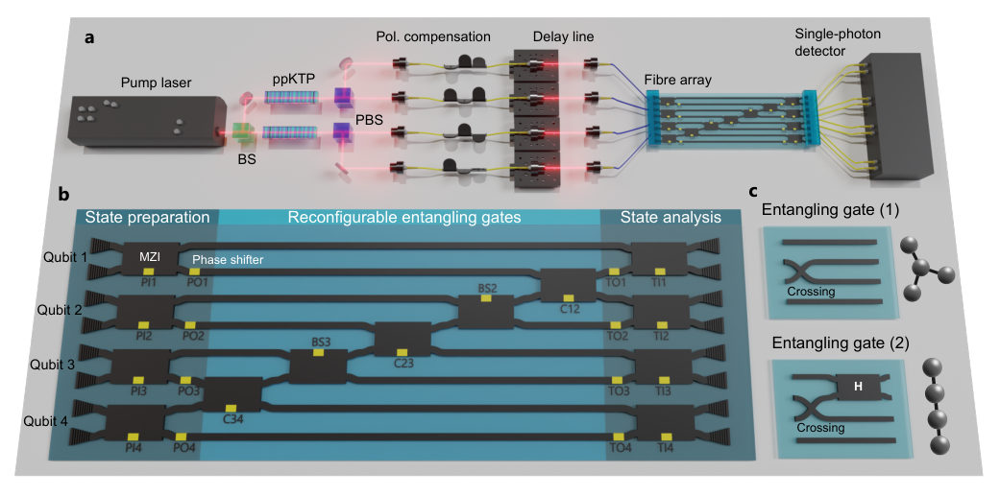
<figcaption class="paper-figure-caption"><b>Fig 1.</b> Figure 1. Experimental setup. a Two type-II SPDC sources generate single photons at 1550 nm wavelength. After temporal synchronisation using delay lines, the photons are coupled into the photonic integrated circuit via a polarisation-maintaining fibre array and on-chip grating couplers, a second fibre array routes the photons to superconducting nanowire single-photon detectors (SNSPDs). The circuit is an 8-mode reconfigurable silicon-on-insulator chip comprising multi-mode interferometers (MMIs) as balanced beam splitters and thermo-optic phase shifters. b Zoom-in of the chip, where yellow rectangles indicate phase shifters whilst black boxes denote Mach-Zehnder interferometers (MZIs)....</figcaption>
</figure>
<figure class="paper-figure-card">
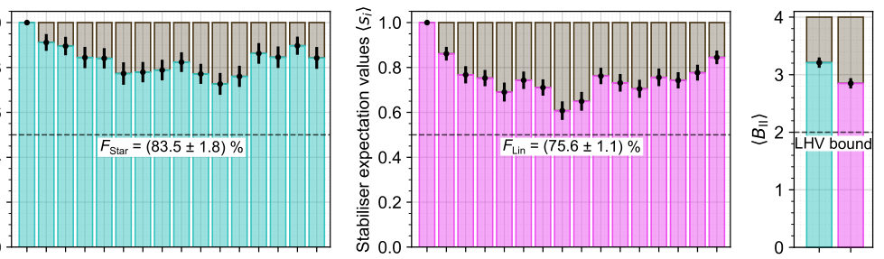
<figcaption class="paper-figure-caption"><b>Fig 2.</b> Figure 2. Graph state characterisation via stabiliser expectation values. a, b Stabiliser expectation values for the generated |Star4⟩and |Lin4⟩state. The dashed line marks the 50 % threshold for genuine multi-partite entanglement. c Verification of non- locality by violation of a two-setting Mermin-type Bell inequality, with |⟨BII⟩Star| = (3.21 ± 0.09) and |⟨BII⟩Lin| = (2.85 ± 0.09).</figcaption>
</figure>
<figure class="paper-figure-card">
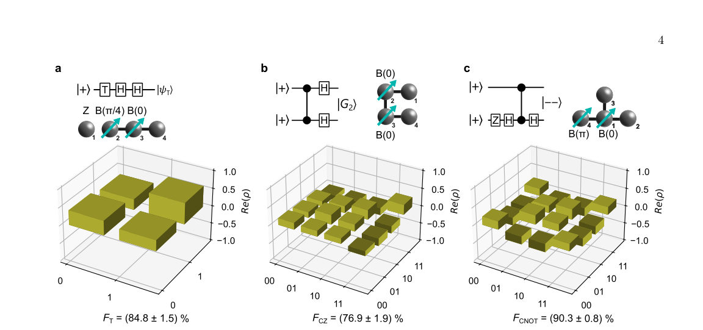
<figcaption class="paper-figure-caption"><b>Fig 3.</b> Figure 3. A set of implemented quantum gates, their implementation via MBQC and the resulting output states. The measurement bases are denoted by B(α) = {|+α⟩, |−α⟩} and Z = {|0⟩, |1⟩}. a, b T-gate operation T|+⟩= 1 √</figcaption>
</figure>
<figure class="paper-figure-card">
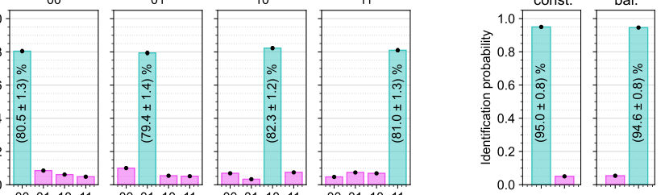
<figcaption class="paper-figure-caption"><b>Fig 4.</b> Figure 4. MBQC implementation of Grover’s search and Deutsch-Josza algorithm. a Circuit representation of the two-qubit Grover’s search algorithm and the four-qubit box graph state used for the MBQC implementation. b Measured identification probabilities for Grover’s algorithm (expected results in cyan). c Circuit and MBQC implementation for a one-bit Deutsch- Josza algorithm using a four-qubit star graph state. d Identification probabilities for the constant function and the balanced function. Expected outcomes in cyan.</figcaption>
</figure>
<figure class="paper-figure-card">
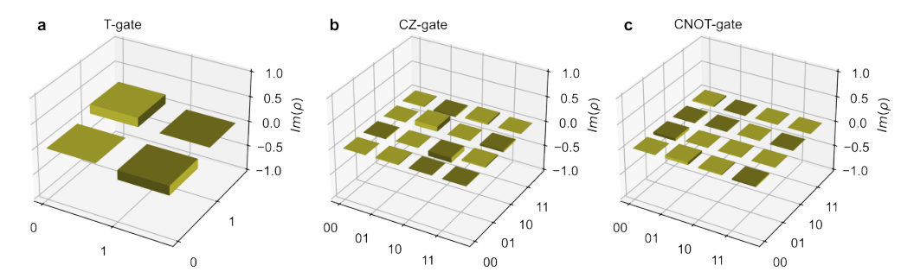
<figcaption class="paper-figure-caption"><b>Fig 5.</b> Figure 5. Imaginary parts of the density matrices ρ for the output states of the MBQC implemented single-qubit and two-qubit gates (real parts shown in Fig. 3 main text).</figcaption>
</figure>
</div>

<p><strong>Summary.</strong> The authors demonstrate Measurement-Based Quantum Computing using four-photon graph states generated on an integrated silicon photonic chip. They successfully implemented fundamental universal gates and tested algorithms like Grover's search, achieving high fidelities that confirm the feasibility of scaling this technology for future quantum computation.</p>
<p><strong>Why it may be interesting.</strong> This work is highly relevant as it provides a concrete experimental realization of fault-tolerant quantum computation principles (MBQC) on a scalable solid-state platform, advancing the field of photonic quantum information processing.</p>
<details>
<summary>Detailed structure</summary>
<p><strong>Main problem.</strong> The goal is to demonstrate Measurement-Based Quantum Computing (MBQC) on a scalable photonic platform, circumventing the need for deterministic photon-photon interactions.</p>
<p><strong>Main result.</strong> The experiment successfully demonstrated reconfigurable four-photon MBQC using integrated silicon photonics, achieving high fidelities for graph state generation and implementing universal quantum gates like T, CZ, and CNOT.</p>
<p><strong>Method.</strong> MBQC is implemented by performing adaptive measurements on highly entangled photonic graph states generated on an integrated chip. Quantum algorithms (Grover's, Deutsch-Jozsa) were also demonstrated using these resource states.</p>
<p><strong>Model / system.</strong> The physical system is an integrated silicon photonic chip utilizing dual-rail encoding across eight modes to encode four photonic qubits. The computation relies on generating and measuring specific entangled graph states ($    ext{|Star4}
angle$, $   ext{|Lin4}
angle$).</p>
<p><strong>Key observables.</strong> Fidelities for graph states ($F_{	ext{Star}} \approx 83.5\%$, $F_{	ext{Lin}} \approx 75.6\%$), gate fidelities ($F_{	ext{CNOT}} \approx 90.3\%$), and violation of Bell inequalities ($   ext{|}\langle B_{II} 
angle   ext{|}_{    ext{Star}} = (3.21 \pm 0.09)$).</p>
<p><strong>Important parameters / regimes.</strong> The system operates with four photonic qubits, utilizing integrated silicon photonics components like thermo-optic phase shifters and grating couplers.</p>
<p><strong>Assumptions / limitations.</strong> The work establishes feasibility for four-photon MBQC; limitations include noise sources from losses, non-perfect indistinguishability, and the need for deterministic single-photon sources for scaling.</p>
<p><strong>Figures summary.</strong> Figures illustrate the experimental setup (SPDC sources coupled to the chip), confirm entanglement via stabilizer measurements and Bell inequality violation, and detail the implementation of quantum gates (T, CZ, CNOT) using MBQC principles.</p>
<p><strong>Paper structure.</strong> The paper details the physical platform diagnostics (waveguide loss, coupling efficiency), characterizes the single-photon source quality (HOM visibility), demonstrates graph state generation and entanglement verification via Bell tests, and finally implements fundamental universal quantum gates and algorithms using these states.</p>
</details>
<details>
<summary>Abstract</summary>
<p>Integrated photonics provides a scalable platform for quantum information processing. In this context, measurement-based quantum computing (MBQC) offers an attractive approach in which quantum computation is realised by adaptive measurements on highly entangled graph states, circumventing the need for deterministic photon-photon interactions. Here, we demonstrate MBQC on an integrated silicon photonic chip capable of generating photonic graph states with up to four qubits. We achieve fidelities of $F_{Star} = (83.5 \pm 1.8)\,\%$ and $F_{Lin} = (75.6 \pm 1.1)\,\%$ for four-photon star and linear graph states, respectively. We use these resource states to implement MBQC-based single- and two-qubit gates and to demonstrate Grover's search algorithm and the Deutsch-Jozsa algorithm. These results establish the feasibility of reconfigurable four-photon MBQC on an integrated photonic platform and provide a foundation for future larger-scale implementations.</p>
</details>
<p><sub><a href="#top">↑ back to top</a></sub></p>

<p><a id="paper-2607.07997"></a></p>
<h3 id="smoothing-exponents-and-decoupling-in-semifinite-von-neumann-algebras"><a href="http://arxiv.org/abs/2607.07997v1">Smoothing Exponents and Decoupling in Semifinite von Neumann Algebras</a></h3>
<p><strong>Authors:</strong> Zhiwen Lin, Hongsen Qiu, Xinyu Zhang<br>
<strong>Type:</strong> theory · <strong>Category:</strong> quantum information and computing · <strong>PDF:</strong> <a href="https://arxiv.org/pdf/2607.07997v1">https://arxiv.org/pdf/2607.07997v1</a><br>
<strong>Analysis basis:</strong> full PDF text, analyzed in chunks
<strong>Topic relevance:</strong> 🔥 <code>entanglement &amp; information structure</code> <strong>4/5</strong> · <code>Keldysh / 2PI / non-Gaussian methods</code> <strong>1/5</strong> · <code>correlated / nonlocal dissipation</code> <strong>1/5</strong> · <code>driven-dissipative phase transition</code> <strong>1/5</strong> · <code>methods for driven-dissipative</code> <strong>1/5</strong> · <code>non-equilibrium dynamics</code> <strong>1/5</strong> · <code>non-equilibrium universality</code> <strong>1/5</strong></p>
<div class="figure-strip-hint">↔ Scroll figures horizontally</div>
<div class="paper-figures-scroll">
<figure class="paper-figure-card">
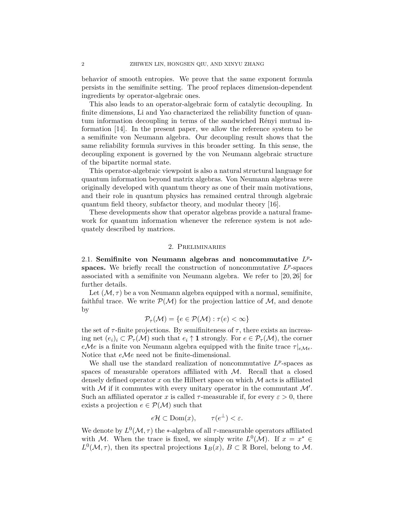
<figcaption class="paper-figure-caption"><b>Fig 1.</b> Low-resolution page preview, page 2</figcaption>
</figure>
<figure class="paper-figure-card">
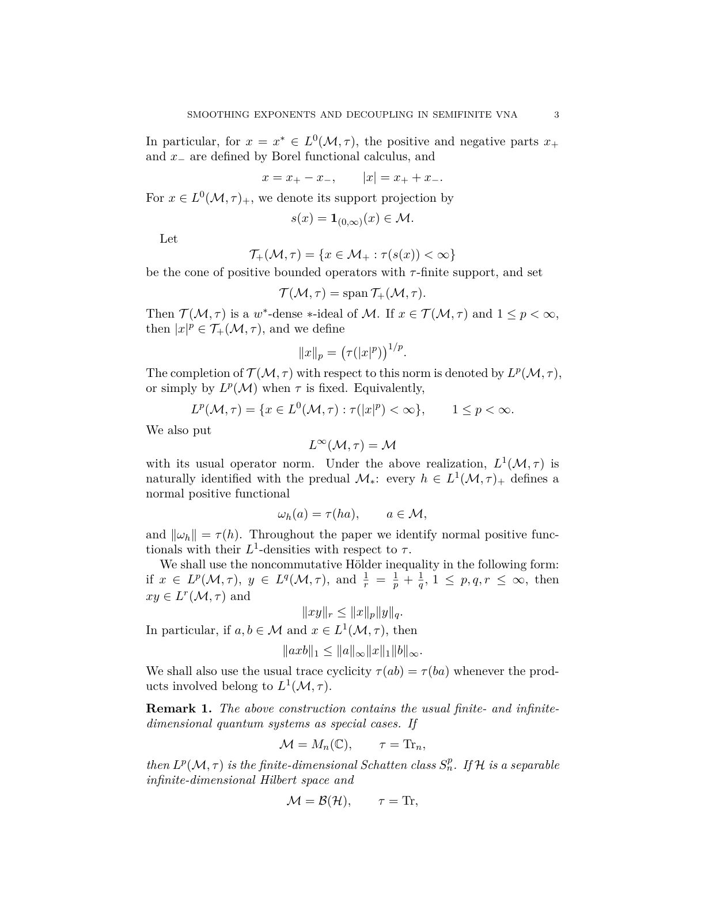
<figcaption class="paper-figure-caption"><b>Fig 2.</b> Low-resolution page preview, page 3</figcaption>
</figure>
<figure class="paper-figure-card">

<figcaption class="paper-figure-caption"><b>Fig 3.</b> Low-resolution page preview, page 4</figcaption>
</figure>
<figure class="paper-figure-card">

<figcaption class="paper-figure-caption"><b>Fig 4.</b> Low-resolution page preview, page 5</figcaption>
</figure>
<figure class="paper-figure-card">

<figcaption class="paper-figure-caption"><b>Fig 5.</b> Low-resolution page preview, page 6</figcaption>
</figure>
</div>

<p><strong>Summary.</strong> This theoretical paper extends concepts from finite-dimensional quantum information theory—specifically smoothing exponents and decoupling bounds—to the general setting of semifinite von Neumann algebras. By developing new operator-algebraic tools, the authors establish exact formulas showing that these fundamental physical limits depend only on the underlying algebraic structure, not on artificial dimension truncations.</p>
<p><strong>Why it may be interesting.</strong> This work provides rigorous mathematical tools to analyze quantum resource theories (like entanglement or coherence) in infinite-dimensional settings relevant to continuous variable systems or large quantum memories, which is highly relevant for advanced quantum information theory.</p>
<details>
<summary>Detailed structure</summary>
<p><strong>Main problem.</strong> The paper investigates the smoothing exponent of the max-relative entropy and develops a framework for catalytic quantum information decoupling within the mathematical setting of semifinite von Neumann algebras.</p>
<p><strong>Main result.</strong> They derive exact exponent formulas showing that these quantities are governed by the underlying algebraic structure rather than finite matrix dimension estimates, generalizing known results to infinite dimensions.</p>
<p><strong>Method.</strong> The methodology involves developing operator-algebraic replacements for finite-dimensional tools and utilizing noncommutative L^p-spaces associated with semifinite von Neumann algebras.</p>
<p><strong>Model / system.</strong> The theoretical framework is built upon general quantum systems described by semifinite von Neumann algebras (VNA), extending beyond simple matrix models. Concepts from quantum information theory, such as Rényi relative entropies and divergences, are central to the analysis.</p>
<p><strong>Key observables.</strong> Smoothing exponent, max-relative entropy ($D_\infty$), decoupling reliability exponent, and sandwiched Rényi mutual information.</p>
<p><strong>Important parameters / regimes.</strong> The parameter $s$ (related to the order of the divergence) is crucial for optimization; limits as dimension/index go to infinity are key.</p>
<p><strong>Assumptions / limitations.</strong> The primary technical challenge overcome is moving from finite-dimensional arguments to the general semifinite setting, requiring intrinsic algebraic tools.</p>
<p><strong>Paper structure.</strong> The paper progresses by establishing foundational $L^p$-space definitions on VNA, defining generalized information divergences, proving key continuity lemmas (like for Legendre transforms), and finally applying these results to derive the exponent formulas for decoupling and smoothing.</p>
</details>
<details>
<summary>Abstract</summary>
<p>We study the smoothing exponent of the max-relative entropy in semifinite von Neumann algebras. Our main result gives an exact exponent formula in this setting. The proof develops operator-algebraic replacements for the dimension-dependent tools used in finite-dimensional arguments. These ingredients show that the smoothing exponent is governed by the underlying von Neumann algebraic structure rather than by matrix dimension estimates. As an application, we formulate catalytic quantum information decoupling with a semifinite von Neumann algebraic reference system. We prove an intrinsic layer-cake lemma for von Neumann algebras, which removes the countable spectrum assumption in the finite-dimensional proof and yields the corresponding semifinite estimate. Consequently, the decoupling reliability exponent is described by the same sandwiched Rényi mutual information formula as in the finite-dimensional theory.</p>
</details>
<p><sub><a href="#top">↑ back to top</a></sub></p>

<p><a id="paper-2607.08096"></a></p>
<h3 id="center-of-mass-bounds-and-harmonic-extremality"><a href="http://arxiv.org/abs/2607.08096v1">Center-of-Mass Bounds and Harmonic Extremality</a></h3>
<p><strong>Authors:</strong> Arseny Pantsialei<br>
<strong>Type:</strong> theory · <strong>Category:</strong> other · <strong>PDF:</strong> <a href="https://arxiv.org/pdf/2607.08096v1">https://arxiv.org/pdf/2607.08096v1</a><br>
<strong>Analysis basis:</strong> full PDF text, analyzed in chunks
<strong>Topic relevance:</strong> 🔥 <code>analog quantum simulation</code> <strong>4/5</strong> · <code>non-equilibrium dynamics</code> <strong>2/5</strong> · <code>Frenkel-Kontorova</code> <strong>1/5</strong> · <code>Keldysh / 2PI / non-Gaussian methods</code> <strong>1/5</strong> · <code>entanglement &amp; information structure</code> <strong>1/5</strong></p>
<div class="figure-strip-hint">↔ Scroll figures horizontally</div>
<div class="paper-figures-scroll">
<figure class="paper-figure-card">

<figcaption class="paper-figure-caption"><b>Fig 1.</b> Low-resolution page preview, page 2</figcaption>
</figure>
<figure class="paper-figure-card">

<figcaption class="paper-figure-caption"><b>Fig 2.</b> Low-resolution page preview, page 3</figcaption>
</figure>
<figure class="paper-figure-card">

<figcaption class="paper-figure-caption"><b>Fig 3.</b> Low-resolution page preview, page 4</figcaption>
</figure>
<figure class="paper-figure-card">

<figcaption class="paper-figure-caption"><b>Fig 4.</b> Low-resolution page preview, page 5</figcaption>
</figure>
<figure class="paper-figure-card">

<figcaption class="paper-figure-caption"><b>Fig 5.</b> Low-resolution page preview, page 6</figcaption>
</figure>
</div>

<p><strong>Summary.</strong> This paper rigorously analyzes the center-of-mass dynamics in interacting 1D many-body quantum systems. It derives a sharp upper bound showing that the ground-state fluctuation of the center-of-mass is limited by the system's active spectral gap. Crucially, it proves that this maximum rigidity (saturation) is achieved if and only if the external trapping potentials are harmonic, establishing harmonic confinement as the unique static extremizer.</p>
<p><strong>Why it may be interesting.</strong> This work provides powerful spectral tools—relating ground-state variances to energy gaps—that are highly relevant in AMO physics for understanding how trapping potentials dictate collective excitations and rigidity in systems like trapped atoms or quantum chains.</p>
<details>
<summary>Detailed structure</summary>
<p><strong>Main problem.</strong> The paper extends the harmonic-rigidity mechanism, traditionally known for one-body systems, to analyze the center-of-mass observable in interacting many-body quantum systems.</p>
<p><strong>Main result.</strong> It establishes a sharp upper bound on the ground-state center-of-mass fluctuation ($   ext{Var}_0(X)$) proportional to the active spectral gap ($\Delta X$), showing that equality holds if and only if the external trapping potentials are harmonic with a common frequency (under positivity assumptions).</p>
<p><strong>Method.</strong> The analysis relies heavily on commutator identities involving the Hamiltonian ($H$) and the center-of-mass operator ($X$), leading to rigorous bounds derived from spectral properties.</p>
<p><strong>Model / system.</strong> The system consists of one-dimensional many-body quantum particles with masses $m_i$ interacting via translation-invariant potentials, subject to external trapping potentials $V_i(x_i)$. The Hamiltonian is explicitly defined in terms of kinetic and potential energy terms.</p>
<p><strong>Key observables.</strong> Center-of-mass fluctuation ($  ext{Var}_0(X)$), Active Spectral Gap ($\Delta X$), Structural Defect ($G$), Variance Deficit ($D_X$).</p>
<p><strong>Important parameters / regimes.</strong> The ratio $\hbar^2/(2M)$ linking the variance bound to the gap, and the common frequency $\Omega$ characterizing harmonic confinement.</p>
<p><strong>Assumptions / limitations.</strong> The primary results hold generally without assuming ground state positivity ($\psi_0 > 0$), but the complete characterization of the equality case requires this positivity assumption.</p>
<p><strong>Paper structure.</strong> The paper builds from establishing fundamental commutator identities for $X$ and $H$, deriving a general sharp bound on $  ext{Var}_0(X)$, and then characterizing the necessary and sufficient conditions (especially under positivity) for this bound to be saturated, linking saturation directly to harmonic confinement.</p>
</details>
<details>
<summary>Abstract</summary>
<p>We study the center-of-mass observable in one-dimensional many-body systems with translation-invariant interactions and extend the harmonic-rigidity mechanism from the one-body setting to an interacting many-body problem. We prove a sharp upper bound on the ground-state center-of-mass fluctuation in terms of the active spectral gap associated with the center-of-mass probe, and show that this bound does not require any positivity assumption on the ground state. In the positivity class, we characterize the equality case completely. Exact saturation occurs if and only if the external one-body traps are harmonic with a common frequency, while the interaction may remain arbitrary within the translation-invariant class. We also identify a natural rigidity defect measuring deviation from the harmonic extremal situation and prove quantitative near-saturation estimates controlling both the variance deficit and the spectral weight outside the first active shell. In this way, the paper establishes harmonic confinement as the unique static extremizer for the rigid interacting center-of-mass mode at fixed active gap.</p>
</details>
<p><sub><a href="#top">↑ back to top</a></sub></p>

<p><a id="paper-2607.08591"></a></p>
<h3 id="distributed-monogamy-of-entanglement-limits-quantum-channel-simulation"><a href="http://arxiv.org/abs/2607.08591v1">Distributed Monogamy of Entanglement limits Quantum Channel Simulation</a></h3>
<p><strong>Authors:</strong> Rabsan Galib Ahmed, Graeme Smith<br>
<strong>Type:</strong> theory · <strong>Category:</strong> quantum information and computing · <strong>PDF:</strong> <a href="https://arxiv.org/pdf/2607.08591v1">https://arxiv.org/pdf/2607.08591v1</a><br>
<strong>Analysis basis:</strong> full PDF text, analyzed in chunks
<strong>Topic relevance:</strong> 🔥 <code>entanglement &amp; information structure</code> <strong>4/5</strong> · <code>Keldysh / 2PI / non-Gaussian methods</code> <strong>1/5</strong> · <code>correlated / nonlocal dissipation</code> <strong>1/5</strong> · <code>driven-dissipative phase transition</code> <strong>1/5</strong> · <code>methods for driven-dissipative</code> <strong>1/5</strong></p>
<div class="figure-strip-hint">↔ Scroll figures horizontally</div>
<div class="paper-figures-scroll">
<figure class="paper-figure-card">

<figcaption class="paper-figure-caption"><b>Fig 1.</b> FIG. 1. Simulating one quantum channel (C′) with another (C). We use the trace distance between the Choi states of the channels in the figure to quantify the error of simulation. In the asymptotically many uses of C (n →∞), we require a vanishingly small error.</figcaption>
</figure>
<figure class="paper-figure-card">

<figcaption class="paper-figure-caption"><b>Fig 2.</b> FIG. 2. A (3, 2)-extension, σAB[5]. Any two Bi’s can be jointly processed to output the (3, 2)-extendible state, ρAB.</figcaption>
</figure>
</div>

<p><strong>Summary.</strong> This paper develops advanced entanglement measures, such as fractional extendibility, and applies them alongside the concept of distributed monogamy of entanglement. Using these tools, the authors establish strict impossibility theorems showing that certain noisy quantum channels cannot simulate others if their noise parameters fall within specific ranges.</p>
<p><strong>Why it may be interesting.</strong> This work provides rigorous mathematical tools (fractional extendibility) to quantify resource limitations in quantum communication protocols, which is central to understanding achievable rates and bounds in quantum information theory.</p>
<details>
<summary>Detailed structure</summary>
<p><strong>Main problem.</strong> The paper investigates fundamental limits on quantum channel simulation, specifically determining when one noisy channel cannot be simulated by another.</p>
<p><strong>Main result.</strong> They prove that a quantum erasure channel $N_\gamma$ with noise parameter $\gamma$ cannot simulate an erasure channel $N_\lambda$ if $\gamma < \lambda \le 1/2$, establishing quantitative bounds on simulation feasibility.</p>
<p><strong>Method.</strong> The analysis relies on introducing and utilizing 'fractional extendibility' as a refined measure of quantum correlation, alongside the established 'distributed monogamy of entanglement'.</p>
<p><strong>Model / system.</strong> The primary model is the quantum erasure channel $N_\lambda$, which transmits input perfectly with probability $\lambda$ and erases it otherwise. The analysis uses concepts from multi-partite entanglement on tensor product states.</p>
<p><strong>Key observables.</strong> Fractional extendibility, Quantum Capacity ($Q(N_\lambda)$), and the average probability of extracting an EPR pair from random subsets of systems.</p>
<p><strong>Important parameters / regimes.</strong> The erasure channel parameter $\lambda$ (and related noise parameters $\gamma$), and the ratio $k/n$ derived from distributed monogamy.</p>
<p><strong>Assumptions / limitations.</strong> The proof for irrational parameters assumes that if simulation were possible, it would contradict results proven for rational numbers; also relies on vanishing trace distance implying entanglement constraints.</p>
<p><strong>Figures summary.</strong> Figure 1 illustrates the concept of simulating one quantum channel using another via the trace distance between Choi states. Figure 2 depicts a specific $(3, 2)$-extension state $\sigma_{AB}[5]$.</p>
<p><strong>Paper structure.</strong> The paper builds from defining fractional extendibility and proving its invariance properties; it then establishes the quantitative bound of distributed monogamy of entanglement; finally, these tools are combined to prove the impossibility of simulating noisier channels with less noisy ones.</p>
</details>
<details>
<summary>Abstract</summary>
<p>Entanglement is monogamous: if it is shared among more than two parties, the entanglement between any pair cannot be very strong. For an integer $k\geq 2$, $k$-extendibility of a state $ρ_{AB}$ quantifies this as the number of copies of $B$ that can be simulated by the state's environment. We introduce fractional extendibility, which gives a finer characterization of the quantum correlation that is leaked to the environment, and prove that it is invariant under tensor products and monotonic under local processing. We also establish the distributed monogamy of entanglement: for any state on $AB_1B_2\dots B_n$, the maximum average probability of extracting an EPR pair from a random subset of $k \leq n/2$ systems among the $B_i$'s is the fraction $k/n$. With these tools we show that any quantum erasure channel with erasure probability more than a half cannot simulate a less noisy erasure channel, even with asymptotically many uses of the more noisy channel.</p>
</details>
<p><sub><a href="#top">↑ back to top</a></sub></p>

<p><a id="paper-2607.08513"></a></p>
<h3 id="metropolitan-entanglement-distribution-between-an-atom-and-a-near-visible-photon"><a href="http://arxiv.org/abs/2607.08513v1">Metropolitan entanglement distribution between an atom and a near-visible photon</a></h3>
<p><strong>Authors:</strong> Maya Büki, Pooja Malik, Florian Fertig, Tobias Frank, Marvin Scholz, Tommy Block, Gianvito Chiarella, Yiru Zhou, Emanuele Distante, Pau Farrera, Gerhard Rempe, Harald Weinfurter<br>
<strong>Type:</strong> experiment · <strong>Category:</strong> quantum information and computing · <strong>PDF:</strong> <a href="https://arxiv.org/pdf/2607.08513v1">https://arxiv.org/pdf/2607.08513v1</a><br>
<strong>Analysis basis:</strong> full PDF text, analyzed in chunks
<strong>Topic relevance:</strong> 🔥 <code>QC/QI experiment</code> <strong>4/5</strong> · <code>quantum optics experiment</code> <strong>3/5</strong> · <code>interference shaping light</code> <strong>1/5</strong></p>
<div class="figure-strip-hint">↔ Scroll figures horizontally</div>
<div class="paper-figures-scroll">
<figure class="paper-figure-card">

<figcaption class="paper-figure-caption"><b>Fig 1.</b> FIG. 1. Metropolitan quantum link. Two laboratories in the greater Munich area are connected via a 24 km long fiber in order to distribute atom-photon entanglement. The Rb atom at LMU (node 1) is entangled with a photonic qubit (see level scheme) which is subsequently converted to a telecom wave- length at QFC1, propagates 24 km of fiber, is back-converted to 780 nm at QFC2, and after spectral filtering finally mea- sured in a photon projection measurement at MPQ (node 2). After communicating to LMU the arrival of the photon at MPQ, the atomic state is measured via florescence read- out using a micro-electro-mechanical systems (MEMS) switch and an avalanche photodetector (APD).</figcaption>
</figure>
<figure class="paper-figure-card">

<figcaption class="paper-figure-caption"><b>Fig 2.</b> FIG. 2. Characterization of the QFCs. Measurement of the external conversion efficiency of QFC1 (a) and QFC2 (b) - in red - and noise at the end of the communication link when changing (a) the pump power of QFC1 (power of QFC2 is fixed at 300 mW) and (b) the pump power of QFC2 (power of QFC1 is fixed at 400 mW) - in blue. The ratio between the ef- ficiency and the noise clicks is proportional to the SNR, which is depicted in green. All solid lines are obtained from fits to experimental data using equations that are found in [47]. The vertical dashed grey lines indicate the pump powers used in the entanglement experiment for QFC1 and QFC2 respec- tively.</figcaption>
</figure>
<figure class="paper-figure-card">

<figcaption class="paper-figure-caption"><b>Fig 3.</b> FIG. 4. Atom-photon state correlation at 780 nm after 24 km of fiber. Conditional redetection probability of the atom at maximum correlation points measured in three different basis combinations for both the atom (X,Y and Z) and the pho- ton measurement. The horizontal axis indicates the photon qubit polarization measurement result. The different values obtained for the VH, DA and LR bases lead to an average visibility of ¯V = 82.5 ± 2.0%. The photon detection rate for this measurement was 0.7 min−1. Error bars represent one standard deviation.</figcaption>
</figure>
<figure class="paper-figure-card">

<figcaption class="paper-figure-caption"><b>Fig 4.</b> FIG. 3. Atom-photon state correlation at the telecom wave- length after 24 km of fiber. The conditional redetection prob- ability for different readout angles of the atom depending on the measured polarization state of the photon (horizontal and vertical (|H⟩, |V ⟩) or diagonal and antidiagonal linear polar- ization (|D⟩, |A⟩) ) as indicated in the legend shows fringes with the average visibility ¯V = 82.4 ± 0.8%. The measure- ment points at 45° and 135° are used for calculating the S- parameter, with result S = 2.30±0.08, clearly violating Bell’s inequality. Error bars represent one standard deviation, and the photon-detection window was set to 60 ns.</figcaption>
</figure>
</div>

<p><strong>Summary.</strong> The research demonstrates a functional metropolitan quantum network link by distributing entanglement between an atom and a photon over $24 	ext{ km}$ of standard optical fiber. This was achieved by employing specialized quantum frequency converters to shift the photon's wavelength between the atomic resonance (visible) and the telecom band. The success proves a crucial step toward integrating local quantum processors with existing long-distance communication infrastructure.</p>
<p><strong>Why it may be interesting.</strong> This work is highly relevant as it tackles the critical engineering hurdle—wavelength conversion—necessary to connect atomic quantum memories (which operate at visible wavelengths) with existing, long-haul fiber infrastructure used for quantum communication networks.</p>
<details>
<summary>Detailed structure</summary>
<p><strong>Main problem.</strong> The primary challenge addressed is overcoming the wavelength mismatch between quantum network nodes (operating at visible/near-visible wavelengths) and the telecom band required for long-distance fiber transmission to distribute entanglement.</p>
<p><strong>Main result.</strong> The authors successfully demonstrated a metropolitan quantum link capable of distributing atom-photon entanglement over 24 km by implementing bidirectional frequency conversion, maintaining high fidelity ($F \geq 86.9\%$).</p>
<p><strong>Method.</strong> The experiment utilizes quantum frequency converters (QFCs) based on periodically-poled lithium niobate to convert the photon wavelength between the atomic resonance ($\lambda = 780 	ext{ nm}$) and the telecom S-band ($   ext{1514 nm}$), enabling transmission through deployed fiber.</p>
<p><strong>Model / system.</strong> The system is a metropolitan quantum link connecting two laboratories via $24 	ext{ km}$ of commercial optical fiber. It involves an atomic qubit (e.g., $ ext{Rb}$) entangled with a photon, which undergoes conversion at the ends of the fiber segment.</p>
<p><strong>Key observables.</strong> Entanglement fidelity ($F$), visibility ($ar{V}$), Bell parameter ($S$), and overall entanglement distribution efficiency.</p>
<p><strong>Important parameters / regimes.</strong> Fiber length ($24 	ext{ km}$), atomic wavelength ($780 	ext{ nm}$), telecom wavelength ($  ext{1514 nm}$), and achieved photon transfer efficiency ($1.7\%$).</p>
<p><strong>Assumptions / limitations.</strong> The system relies on the functionality of quantum frequency converters and assumes stable operation despite environmental drifts, which are actively corrected using classical polarization monitoring.</p>
<p><strong>Figures summary.</strong> Figures illustrate the setup showing entanglement generation at $780 	ext{ nm}$, conversion to $   ext{1514 nm}$ for fiber propagation, and back-conversion. Results show state correlations confirming entanglement violation of Bell's inequality both before and after full link transmission.</p>
<p><strong>Paper structure.</strong> The paper details the experimental setup involving frequency conversion stages ($  ext{QFC}1$ and $    ext{QFC}2$) to bridge wavelength gaps, followed by long-distance propagation through fiber. Key results confirm high fidelity entanglement distribution over $24 	ext{ km}$, concluding with a discussion of future applications in quantum networking.</p>
</details>
<details>
<summary>Abstract</summary>
<p>Entanglement distribution is the overarching purpose of quantum networks. While communication over long distances can use deployed fiber infrastructure, it requires photons in the telecom band. However, advanced quantum network nodes do not operate at such wavelengths. Here we overcome this limitation with two tailor-made low-noise quantum-frequency converters to distribute entanglement between a single atom and a resonant photon over 14km line-of-sight via 24km of a deployed commercial fiber. The photon at wavelength 780nm is first entangled with the atom, then converted to the telecom S-band, and finally back-converted after propagation through the fiber. This link enables a photon transfer efficiency of 1.7% while affecting the atom-photon entanglement fidelity by less than 1%. This brings integration of atomic quantum nodes with existing long-distance fiber networks into reach, enabling novel applications in quantum information processing.</p>
</details>
<p><sub><a href="#top">↑ back to top</a></sub></p>

<p><a id="paper-2607.08702"></a></p>
<h3 id="quantum-geometric-design-of-lattice-generalized-landau-levels"><a href="http://arxiv.org/abs/2607.08702v1">Quantum-Geometric Design of Lattice Generalized Landau Levels</a></h3>
<p><strong>Authors:</strong> Bohao Li, Fengcheng Wu<br>
<strong>Type:</strong> theory · <strong>Category:</strong> strongly correlated electrons · <strong>PDF:</strong> <a href="https://arxiv.org/pdf/2607.08702v1">https://arxiv.org/pdf/2607.08702v1</a><br>
<strong>Analysis basis:</strong> full PDF text, analyzed in chunks
<strong>Topic relevance:</strong> 🔥 <code>analog quantum simulation</code> <strong>4/5</strong> · <code>entanglement &amp; information structure</code> <strong>3/5</strong> · <code>non-equilibrium dynamics</code> <strong>1/5</strong></p>
<div class="figure-strip-hint">↔ Scroll figures horizontally</div>
<div class="paper-figures-scroll">
<figure class="paper-figure-card">

<figcaption class="paper-figure-caption"><b>Fig 1.</b> FIG. 2. (a,b) ED spectra at ν = 1/2 for the generalized 1LL band in the N = 4 model on clusters with Ns = 26 and 28, respectively. Energy is measured relative to the ground state.</figcaption>
</figure>
<figure class="paper-figure-card">

<figcaption class="paper-figure-caption"><b>Fig 2.</b> FIG. 1. Band structures (left panels) and hopping amplitudes (right panels) for the N = 2, 3, and 4 models. Left panels: Colors encode the sublattice weights. Right panels: The cor- responding hopping amplitudes as a function of distance d, measured in unit of the lattice constant a, are shown in (b), (d), and (f). Insets display the lattice structures, with dashed lines indicating the unit cells.</figcaption>
</figure>
<figure class="paper-figure-card">

<figcaption class="paper-figure-caption"><b>Fig 3.</b> FIG. 4. (a,b) ED spectra at ν = 1/5 and 1/6 in the C = −2 band of the N = 3 model on clusters with Ns = 30 and 36, respectively. Energy is measured relative to the ground state.</figcaption>
</figure>
<figure class="paper-figure-card">

<figcaption class="paper-figure-caption"><b>Fig 4.</b> FIG. 3. (a) ED spectrum at ν = 1/2 for the C = −2 band in the N = 3 model, calculated on a cluster with Ns = 28. (b) Mean-field energy of Slater determinant states for the same system, parameterized on the Bloch sphere. Arrows indicate the range of the data. (c) Density variations of the Slater de- terminant states (represented by marker size) along the [100], [111], and [¯1¯1¯1] directions of the Bloch sphere. Dashed lines denote the charge-density-wave supercell.</figcaption>
</figure>
</div>

<p><strong>Summary.</strong> The paper details the quantum-geometric design of novel lattice models intended to host generalized Landau levels. By analyzing these structured systems using exact diagonalization and entanglement spectroscopy, the authors predict and confirm the realization of exotic correlated phases, including fractional Chern insulators and anomalous Hall crystal states.</p>
<p><strong>Why it may be interesting.</strong> This work is highly relevant as it provides a concrete theoretical framework—using engineered lattice Hamiltonians—to model exotic many-body phenomena (like fractional quantum Hall states) that are central to condensed matter theory, bridging geometric design with strong correlation physics.</p>
<details>
<summary>Detailed structure</summary>
<p><strong>Main problem.</strong> The research focuses on designing lattice models with tailored quantum geometry to realize physics analogous to Landau Levels (LLs) and higher-Chern bands, while also studying emergent fractionalized and charge-ordered states.</p>
<p><strong>Main result.</strong> The authors successfully predict and confirm the existence of Abelian Fractional Chern Insulators (FCIs), Moore-Read states, and various anomalous Hall crystal phases in these engineered lattice models using exact diagonalization techniques.</p>
<p><strong>Method.</strong> The primary methods involve constructing generalized LLs via quantum geometry analysis and then employing Exact Diagonalization (ED) coupled with Particle Entanglement Spectrum (PES) analysis to study interacting electron physics on the resulting flat bands.</p>
<p><strong>Model / system.</strong> The models are lattice generalizations of Landau levels, constructed using $N=2, 3,$ and $4$ sublattices on lattices like honeycomb or kagome. The Hamiltonian is studied by projecting interactions onto selected bands derived from these engineered quantum geometries.</p>
<p><strong>Key observables.</strong> Key observables include the Chern number ($C$), the quantum weight ($W$), the many-body average Chern number ($C_{	ext{avg}}$), and the analysis of entanglement gaps ($\xi_{AHC}$) to diagnose topological phases.</p>
<p><strong>Important parameters / regimes.</strong> Important parameters include filling fractions $
u$ (e.g., $1/3, 1/2, 1/5$), the number of sublattices ($N=2, 3, 4$), and hopping decay rates (Gaussian or exponential).</p>
<p><strong>Assumptions / limitations.</strong> Assumptions include the linear independence of basis states used in construction and that quantum geometry can be tailored to enforce specific topological properties.</p>
<p><strong>Figures summary.</strong> Figures illustrate band structures for different $N$ values, ED spectra showing quasi-degenerate ground states at fractional fillings (e.g., $
u=1/2$), and PES plots confirming gaps associated with charge ordering.</p>
<p><strong>Paper structure.</strong> The paper progresses from designing the lattice models based on quantum geometry to analyzing the resulting flat bands via ED for various filling fractions, culminating in the identification of specific correlated topological phases like FCIs and AHCs.</p>
</details>
<details>
<summary>Abstract</summary>
<p>We design lattice models with tailored quantum geometry, including generalized Landau levels (LLs) satisfying the integrated trace condition and higher-Chern bands with ideal quantum geometry. Our models with $N=2$, $3$, and $4$ sublattices include a generalized Haldane model ($N=2$ honeycomb lattice model) with Gaussian-decaying hoppings realizable in twisted bilayer MoTe$_2$, and $N \geq 3$ models with exponentially decaying hoppings. Exact diagonalization reveals fractional Chern insulators in the generalized zeroth LL bands of all three models, a Moore-Read state in the generalized first LL band of the $N=4$ model, and various interaction-driven topological phases$\unicode{x2013}$including integer and fractional anomalous Hall crystals and a multicomponent Halperin state$\unicode{x2013}$in the ideal higher-Chern band of the $N=3$ model. Informed by quantum geometry, our work provides a pathway for lattice realizations of Landau-level and beyond-Landau-level physics.</p>
</details>
<p><sub><a href="#top">↑ back to top</a></sub></p>

<p><a id="paper-2607.08684"></a></p>
<h3 id="entanglement-wedge-reconstruction-without-holographic-quantum-error-correction"><a href="http://arxiv.org/abs/2607.08684v1">Entanglement Wedge Reconstruction without Holographic Quantum Error Correction</a></h3>
<p><strong>Authors:</strong> Seiji Terashima<br>
<strong>Type:</strong> theory · <strong>Category:</strong> other · <strong>PDF:</strong> <a href="https://arxiv.org/pdf/2607.08684v1">https://arxiv.org/pdf/2607.08684v1</a><br>
<strong>Analysis basis:</strong> full PDF text, analyzed in chunks
<strong>Topic relevance:</strong> 🔥 <code>entanglement &amp; information structure</code> <strong>4/5</strong> · <code>correlated / nonlocal dissipation</code> <strong>1/5</strong> · <code>non-equilibrium dynamics</code> <strong>1/5</strong></p>
<div class="figure-strip-hint">↔ Scroll figures horizontally</div>
<div class="paper-figures-scroll">
<figure class="paper-figure-card">

<figcaption class="paper-figure-caption"><b>Fig 1.</b> Low-resolution page preview, page 2</figcaption>
</figure>
<figure class="paper-figure-card">

<figcaption class="paper-figure-caption"><b>Fig 2.</b> Low-resolution page preview, page 3</figcaption>
</figure>
<figure class="paper-figure-card">

<figcaption class="paper-figure-caption"><b>Fig 3.</b> Low-resolution page preview, page 4</figcaption>
</figure>
<figure class="paper-figure-card">

<figcaption class="paper-figure-caption"><b>Fig 4.</b> Low-resolution page preview, page 5</figcaption>
</figure>
<figure class="paper-figure-card">

<figcaption class="paper-figure-caption"><b>Fig 5.</b> Low-resolution page preview, page 6</figcaption>
</figure>
</div>

<p><strong>Summary.</strong> This paper analyzes Entanglement Wedge Reconstruction within AdS/CFT, arguing that the strong interpretation requiring Holographic Quantum Error Correction (HQEC) is incompatible with ordinary local QFTs. By using locality arguments based on low-energy observables, the authors conclude that only a weaker, region-specific reconstruction (subregion complementarity) remains valid.</p>
<p><strong>Why it may be interesting.</strong> While highly theoretical and related to quantum gravity, the core argument about local observables detecting differences in structure (the failure of global consistency) echoes themes relevant to understanding entanglement structure in complex many-body systems or open quantum systems where locality constraints are paramount.</p>
<details>
<summary>Detailed structure</summary>
<p><strong>Main problem.</strong> The paper distinguishes between two interpretations of Entanglement Wedge Reconstruction (EWR) in AdS/CFT: the strong Holographic Quantum Error Correction (HQEC) interpretation versus a weaker, region-by-region reconstruction statement.</p>
<p><strong>Main result.</strong> The authors argue that for ordinary local CFTs, the strong HQEC structure fails due to locality arguments involving low-energy observables. What remains is EWR without HQEC, where each boundary region has its own independent bulk interpretation.</p>
<p><strong>Method.</strong> The analysis uses simple locality arguments and compares predictions from toy models (like HaPPY codes) against the expected behavior of local QFT observables, such as smeared stress tensors.</p>
<p><strong>Model / system.</strong> The framework is AdS/CFT correspondence. The physics involves reconstructing bulk operators in Anti-de Sitter space from boundary Conformal Field Theory (CFT) algebras at low energies ($  ext{H}_{    ext{low}}$).</p>
<p><strong>Key observables.</strong> Smeared stress tensors, local observables, and the structure of overlapping subalgebras $R(A) \cap R(B)$ vs. $R(A \cap B)$.</p>
<p><strong>Important parameters / regimes.</strong> The large N limit ($N=\infty$) versus finite N corrections (interaction order $g$).</p>
<p><strong>Assumptions / limitations.</strong> The argument relies on the assumption that low-energy observables (like smeared stress tensors) are capable of detecting physical support and gravitational dressing, which is violated by HQEC codes.</p>
<p><strong>Paper structure.</strong> The paper systematically contrasts the strong HQEC claim with the weaker algebraic statement. It uses locality arguments to show that ordinary QFTs cannot support a common logical operator across multiple regions, leading to the conclusion of region-specific reconstruction.</p>
</details>
<details>
<summary>Abstract</summary>
<p>Bulk reconstruction is a central problem in AdS/CFT, and entanglement wedge reconstruction is its subregion version. We argue that this subregion statement should be separated from the stronger holographic quantum error correction interpretation, in which one region-independent logical bulk operator has code-preserving representatives in several boundary regions. A simple locality argument shows that such a common reconstruction must commute with the code-preserving local algebras in the complementary regions. This is the mechanism realized in HaPPY-type codes: the erased regions are blind to a protected logical algebra. An ordinary finite $N$ holographic CFT does not have such a protected invisible sector for supergravity fields. Its low-energy local observables, in particular, suitably smeared stress tensors, detect the physical support and gravitational dressing of ordinary bulk operators, up to possible center or superselection data. Thus, there is no such holographic quantum error correction and the $N=\infty$ agreement of global and subregion HKLL formulae is a free-theory statement. What remains is entanglement wedge reconstruction without holographic quantum error correction, or subregion complementarity: each boundary region has its own code-preserving low-energy algebra and its own region-adapted bulk interpretation, rather than a shared logical operator.</p>
</details>
<p><sub><a href="#top">↑ back to top</a></sub></p>

<p><a id="paper-2607.08636"></a></p>
<h3 id="groverfigureofmerit-an-agnostic-figure-of-merit-for-quantum-backend-characterization-in-the-nisq-era"><a href="http://arxiv.org/abs/2607.08636v1">GroverFigureOfMerit: An Agnostic Figure of Merit for Quantum Backend Characterization in the NISQ Era</a></h3>
<p><strong>Authors:</strong> Tiago Restucha, Marcos Guillermo Lammers, Alejandro Fernández<br>
<strong>Type:</strong> both · <strong>Category:</strong> quantum information and computing · <strong>PDF:</strong> <a href="https://arxiv.org/pdf/2607.08636v1">https://arxiv.org/pdf/2607.08636v1</a><br>
<strong>Analysis basis:</strong> full PDF text, analyzed in chunks
<strong>Topic relevance:</strong> 🔥 <code>QC/QI experiment</code> <strong>4/5</strong> · <code>methods for driven-dissipative</code> <strong>1/5</strong> · <code>non-equilibrium dynamics</code> <strong>1/5</strong></p>
<div class="figure-strip-hint">↔ Scroll figures horizontally</div>
<div class="paper-figures-scroll">
<figure class="paper-figure-card">

<figcaption class="paper-figure-caption"><b>Fig 1.</b> Fig. 1. Classification of quantum computing providers by physical architecture.</figcaption>
</figure>
<figure class="paper-figure-card">

<figcaption class="paper-figure-caption"><b>Fig 2.</b> Fig. 2. Qonscious conditional execution flow. The FoM result (score) can feed the decision function to optimize quantum resource usage.</figcaption>
</figure>
<figure class="paper-figure-card">

<figcaption class="paper-figure-caption"><b>Fig 3.</b> Fig. 3. Comparative benchmarking of the Grover Score with a variable number of targets. a) For N = 8, a performance peak is observed at M = 2 coinciding with the optimal theoretical rotation, and generalized degradation to ∼0.5 at M = 4 due to Grover’s algorithmic limit (M = N/2). b) For N = 32, ideal simulators maintain high fidelity, while Fake Providers suffer severe decoherence, relegating their scores to the probability of classical random guessing (M/N). Aria 1 demonstrates greater resilience to noise, significantly surpassing IBM models in this search space.</figcaption>
</figure>
<figure class="paper-figure-card">

<figcaption class="paper-figure-caption"><b>Fig 4.</b> Fig. 4. Score comparison across different backends</figcaption>
</figure>
</div>

<p><strong>Summary.</strong> This paper introduces the GroverFigureOfMerit (FoM), an advanced metric designed to holistically characterize and compare performance across diverse Noisy Intermediate-Scale Quantum (NISQ) hardware platforms. By using Grover's algorithm as a stress test, it quantifies performance by accounting for dynamic noise, transpilation overhead, and topological limitations in a single, unified score.</p>
<p><strong>Why it may be interesting.</strong> It provides a crucial benchmarking tool for assessing algorithmic feasibility on noisy hardware, which is vital for theorists designing complex quantum circuits that must account for physical constraints beyond simple gate fidelity.</p>
<details>
<summary>Detailed structure</summary>
<p><strong>Main problem.</strong> The NISQ era suffers from hardware heterogeneity, where proprietary metrics and static characterizations fail to provide a unified way to select or compare quantum backends.</p>
<p><strong>Main result.</strong> A novel Figure of Merit (GroverFigureOfMerit) based on Grover's algorithm provides a standardized, comparable score that captures dynamic noise, transpilation overhead, and topological constraints across different hardware architectures.</p>
<p><strong>Method.</strong> The authors propose an algorithmic stress test using Grover's search, defining the FoM as a combination of success probability penalized by target state imbalance and leakage to non-marked states.</p>
<p><strong>Model / system.</strong> The work analyzes various NISQ quantum backends (e.g., IBM, IonQ) across different physical architectures, utilizing the Qonscious framework for agnostic execution flow control.</p>
<p><strong>Key observables.</strong> GroverFigureOfMerit score, probability of success on target states, non-uniform amplification penalties, and leakage to non-marked states.</p>
<p><strong>Important parameters / regimes.</strong> Search space size (N), number of qubits (n), coherence times ($T_1/T_2$), and gate error rates are compared against the dynamic FoM score.</p>
<p><strong>Assumptions / limitations.</strong> The primary assumption is that an algorithmic stress test can provide a unified, hardware-agnostic measure of performance superior to static component metrics. Validation on physical QPUs is noted as a future step.</p>
<p><strong>Figures summary.</strong> Figures compare Grover Scores across different backends and scaling parameters (N), demonstrating score collapse due to decoherence or topological overhead on certain processors.</p>
<p><strong>Paper structure.</strong> The paper first identifies the limitations of static characterization metrics in NISQ hardware. It then proposes the GroverFigureOfMerit, details its mathematical formulation incorporating penalties, and validates it by systematically analyzing performance across multiple simulated and real-world quantum providers.</p>
</details>
<details>
<summary>Abstract</summary>
<p>The Noisy Intermediate-Scale Quantum (NISQ) era poses a challenge for developers: hardware providers expose capabilities through heterogeneous interfaces with proprietary metrics varying widely across providers, hindering informed backend selection. Static characterization metrics - coherence times T1/T2, gate error rates - exhibit limitations: they fail to capture dynamic variability across successive executions, overlook the impact of transpilation, and lack architectural comparability across physically distinct technologies. We propose a Figure of Merit (FoM) based on Grover's algorithm as an algorithmic stress test evaluating quantum backend performance holistically. The metric combines success probability on target states with penalties for non-uniform amplification and leakage to non-marked states, yielding a unified score across hardware architectures. Implemented via the Qonscious framework - a conditional execution platform using polymorphic adapters, it executes agnostically on IBM, IonQ backends, and simulators. Main contributions: (1) proposal and validation of GroverFigureOfMerit, incorporating uniformity and leakage penalties (adapted from GRADE) with emphasis on noise, transpilation, and topological constraints; (2) systematic analysis of heterogeneity across nine quantum providers motivating agnostic metrics; and (3) experimental demonstration via ideal simulators and real-processor noise models, confirming sensitivity to noise, topology, and transpilation overhead. Results confirm the metric distinguishes backend performance under a unified score, capturing intrinsic algorithmic limits. Validation on physical QPUs is identified as a natural next step.</p>
</details>
<p><sub><a href="#top">↑ back to top</a></sub></p>

<p><a id="paper-2607.07808"></a></p>
<h3 id="non-local-magic-from-the-entanglement-spectrum"><a href="http://arxiv.org/abs/2607.07808v1">Non-Local Magic from the Entanglement Spectrum</a></h3>
<p><strong>Authors:</strong> Gianpaolo Torre, Fabio Franchini, Salvatore Marco Giampaolo<br>
<strong>Type:</strong> theory · <strong>Category:</strong> quantum information and computing · <strong>PDF:</strong> <a href="https://arxiv.org/pdf/2607.07808v1">https://arxiv.org/pdf/2607.07808v1</a><br>
<strong>Analysis basis:</strong> full PDF text, analyzed in chunks
<strong>Topic relevance:</strong> 🔥 <code>entanglement &amp; information structure</code> <strong>4/5</strong> · <code>analog quantum simulation</code> <strong>1/5</strong> · <code>non-equilibrium dynamics</code> <strong>1/5</strong></p>
<div class="figure-strip-hint">↔ Scroll figures horizontally</div>
<div class="paper-figures-scroll">
<figure class="paper-figure-card">

<figcaption class="paper-figure-caption"><b>Fig 1.</b> Low-resolution page preview, page 2</figcaption>
</figure>
<figure class="paper-figure-card">

<figcaption class="paper-figure-caption"><b>Fig 2.</b> Low-resolution page preview, page 3</figcaption>
</figure>
<figure class="paper-figure-card">

<figcaption class="paper-figure-caption"><b>Fig 3.</b> Low-resolution page preview, page 4</figcaption>
</figure>
<figure class="paper-figure-card">

<figcaption class="paper-figure-caption"><b>Fig 4.</b> Low-resolution page preview, page 5</figcaption>
</figure>
</div>

<p><strong>Summary.</strong> This paper introduces a novel diagnostic tool by reformulating the calculation of 'non-local magic' using the Walsh–Hadamard autocorrelations of the entanglement spectrum. This representation makes the underlying harmonic structure explicit, allowing for systematic theoretical analysis. The results characterize how this non-local resource scales in different quantum regimes, linking it fundamentally to the organization of entanglement eigenvalues.</p>
<p><strong>Why it may be interesting.</strong> It provides a powerful new spectroscopic tool—the entanglement spectrum—to diagnose complex quantum resources like non-local magic, linking it directly to spectral structure rather than just global measures like entropy.</p>
<details>
<summary>Detailed structure</summary>
<p><strong>Main problem.</strong> The primary challenge is developing a tractable method to characterize 'non-local magic,' a resource quantifying genuinely non-local correlations, as its direct calculation is computationally intractable.</p>
<p><strong>Main result.</strong> Non-local magic can be systematically represented using the Walsh–Hadamard autocorrelations of the entanglement spectrum. The scaling behavior of this resource is shown to depend critically on the spectral organization of the entanglement eigenvalues.</p>
<p><strong>Method.</strong> The authors derive an equivalent representation for non-local magic involving fourth moments of autocorrelation functions derived from the entanglement spectrum, allowing for systematic analytical study.</p>
<p><strong>Model / system.</strong> The analysis applies to pure quantum states $|\psi
angle$ partitioned into two subsystems (A and B), examining various theoretical limits such as Haar-random states, product-structured modes, gapped 1D systems, and critical free-fermion models.</p>
<p><strong>Key observables.</strong> Non-local magic ($M_{	ext{Sch}}^2$), the entanglement spectrum eigenvalues ($\lambda_x$), and the second-order Rényi entanglement entropy ($S_2(
ho_A)$).</p>
<p><strong>Important parameters / regimes.</strong> System size (L), spectral organization, and the nature of correlations (e.g., area law vs. logarithmic scaling regimes).</p>
<p><strong>Assumptions / limitations.</strong> The analysis relies on mapping Schmidt vectors to $\mathbb{F}_2$ and uses approximations for random states; a key assumption is that spectral organization governs behavior more strongly than entropy alone.</p>
<p><strong>Paper structure.</strong> The paper develops the mathematical framework by relating non-local magic to Walsh autocorrelations, then applies this framework to analyze scaling laws across different physical regimes (Haar random, gapped, critical) while establishing an upper bound using entanglement entropy.</p>
</details>
<details>
<summary>Abstract</summary>
<p>Non-local magic has recently emerged as a fundamental resource for characterizing genuinely non-local non-stabilizer correlations. However, its direct calculation is an intractable numerical problem, except for small systems, and its understanding remains limited. We derive a representation of non-local magic in terms of the Walsh--Hadamard autocorrelations of the entanglement spectrum. Our representation makes the underlying harmonic structure explicit and enables a systematic analysis of its behaviors for various scenarios. We prove that non-local magic can be upper-bounded by an entanglement entropy and we derive exact analytical results for broad classes of quantum states, characterizing the scaling of non-local magic for volume-law states, as well as ground states of one-dimensional gapped and critical systems. Our results identify the spectral organization of the entanglement spectrum as the key ingredient governing non-local magic and provide a framework for further systematic analytical investigation.</p>
</details>
<p><sub><a href="#top">↑ back to top</a></sub></p>
<hr>
<p>
<a href="index.html">← Index</a>
 · <a href="papers_01.html">← Previous</a> · <a href="papers_03.html">Next →</a>
</p>
<hr>

</body>
</html>
